AlcanceHumor e acolhimento numa lâmina só. Os campeões vão de 48 mil a 78 mil curtidas.
Refs 10, 13, 7, 8, 2, 4
Lead"Comenta a palavra" e recebe no direct. O de sono no colo teve 2.424 comentários.
Refs 25, 24, 22, 3
SalvamentoTabela e guia por idade: curtem pouco e são guardados. É o post que volta pra consulta.
Refs 5, 19, 21, 27
Humor de identificação
1, 2, 4, 6, 10, 12, 13, 16, 18
Mãe em 1ª pessoa, exagero e ironia com a rotina ("Minha escala é 24x7", "Eu às 3 da manhã…"). Quase sem CTA: vive de marcar a amiga e compartilhar.
Acolhimento
7, 8, 9, 14, 20, 23
Culpa, puerpério, "você não está fazendo pouco". Uma frase numa lâmina (7, 8) ou narrativa em 8 a 10 lâminas (20, 23).
Educativo de consulta
5, 11, 15, 17, 19, 21, 27
Tabela, calendário, guia por idade ou por mês. A capa promete utilidade ("Tabelas que toda mãe deveria ter"). O CTA pede pra salvar e mandar pra outra mãe.
Captura de lead
3, 22, 24, 25
Valida a dor, ensina um pedaço e fecha com "comenta SONO / BEBÊ10 / 864 / eu quero". É o que mais conversa com aula, ebook e curso da Day, e com o "comenta QUERO" que já existe no Motor.
Humor de identificaçãoB · Meme sobre fotoSó inspiração
Imagem única em formato de meme com texto sobreposto em foto gerada por IA retratando insônia e pensamentos maternos de forma cômica.
- Tema
- humor materno · insônia, exaustão e independência financeira na maternidade
- Gancho
- A combinação da frase clássica de insônia ('Eu às 3 da manhã...') com a expressão hilária e arregalada da boneca desperta curiosidade e gargalhadas imediatas.
- Hierarquia
- Texto centralizado em destaque cobrindo a metade inferior da imagem, fonte bold branca com sombra preta para leitura sobre o fundo escuro.
- Visual
- Sans-serif bold, caixa baixa/alta, cor branca com contorno/sombra preta. IA, texto pouco.
- Fala
- irônico, divertido, exausto e confessional. “Eu às 3 da manhã...” · “ficar rica e cuidar dos filhos ao mesmo tempo”
- CTA
- Não há CTA explícito na imagem; o engajamento vem naturalmente pela vontade de compartilhar e comentar no tom da legenda 'Jurooo 🗣️😂'.
- Por que funciona
- Toca em duas dores universais da mãe moderna: a privação de sono e a busca incansável por flexibilidade financeira para estar presente na vida dos filhos. A linguagem de meme gera altíssimo compartilhamento nos stories e direct entre mães.
- Versão da Day
- Adaptação para o Manual do Recém-Nascido: usar um meme sobre os cálculos mentais do sono na madrugada ('Eu às 3 da manhã calculando quantas horas vou dormir se o bebê dormir agora 🤡'). Na legenda, a Day entra com acolhimento técnico explicando sobre a importância de redes de apoio e higiene do sono materna.
- Risco Meta
- baixo - É um meme bem-humorado sobre rotina e maternidade sem qualquer promessa ou diagnóstico de saúde.
Texto de cada lâmina
- 1. capa/gancho Eu as 3 da manhã pensado em que negócio uma mãe pode inventar pra ficar rica e cuidar dos filhos ao mesmo tempo🤡😮💨
Legenda original: Jurooo 🗣️😂
#memes #mememae #mãedemenina #maternidade #explore
Humor de identificaçãoA · Print de rede socialCopiar a hierarquia
Print estilizado de tweet/X com relato bem-humorado e exagerado sobre uma sensação física universal.
- Tema
- humor materno · Cheiro de bebê e amamentação/vínculo sensorial
- Gancho
- A descrição hiperbólica e engraçada do cheiro de cabeça de bebê ativa uma memória sensorial imediata no público.
- Hierarquia
- Perfil e arroba no topo com ícone verificado; corpo do texto centralizado em tamanho médio, em bloco único.
- Visual
- Sans-serif moderna (estilo interface de rede social). print, texto médio.
- Fala
- Exagerado, cômico, afetivo e informal. “Gente hj eu...” · “sério foi como se...” · “cheirinho do céu onde reina a paz...”
- CTA
- Sem CTA direto na imagem; engajamento por identificação pura e compartilhamento espontâneo.
- Por que funciona
- Explora uma experiência sensorial universal e extremamente positiva da maternidade (o cheiro do bebê) com humor leve. O formato de tweet facilita a leitura rápida e gera altíssimo compartilhamento nos stories.
- Versão da Day
- O Manual do Recém-Nascido pode adaptar criando um print similar falando do vício do cheirinho de bebê e emendar na legenda a explicação biológica/hormonal (ocitocina, vínculo) de por que o cheiro do recém-nascido é tão apaixonante para a mãe.
- Risco Meta
- baixo - Conteúdo afetivo e bem-humorado sem promessas de cura ou informações médicas sensíveis.
Texto de cada lâmina
- 1. capa/gancho amarguissimas @amarguissimas Gente hj eu cheirei a cabeça de um neném de 3 meses e sério foi como se minhas narinas tivessem sido invadidas pelo cheirinho do céu onde reina a paz, tranquilidade e a harmonia com vários anjinhos tocando harpas
Legenda original: 🇮🇹 Na Itália, pedir cappuccino depois do almoço pode fazer você parecer um turista perdido. Em cidades como Roma, existe uma regra cultural bem forte: cappuccino é bebida de café da manhã.
Os italianos acreditam que o leite, após refeições mais pesadas, atrapalha a digestão; por isso, evitam. Então, após o almoço ou jantar, o comum é pedir: espresso (curto e forte) ou nenhum café com leite.
Você até pode pedir cappuccino à tarde - ninguém vai te impedir. Mas, provavelmente, vão perceber na hora que você não é local. Parece bobagem, mas, na Itália, o café é quase uma tradição sagrada.
#Curiosidades #Itália #Cultura #VocêSabia #Viral
Captura de leadA · Print de rede socialCopiar a hierarquia
Carrossel em formato visual de tweets desmentindo frases/pitacos populares sobre recém-nascidos, finalizando com prova social e CTA para aula ao vivo.
- Tema
- cuidados com o bebê · mitos sobre recém-nascido, sono e rotina
- Gancho
- Validação imediata da dor da mãe recente (ouvir palpites sem sentido) aliada a uma imagem fofa de recém-nascido, despertando curiosidade sobre quais mitos ela pode estar seguindo.
- Hierarquia
- Interface simulada de rede social (Twitter): foto e nome da médica no topo, frase de palpite entre aspas em negrito de destaque, palavra 'REALIDADE:' em caixa alta, seguida de corpo de texto explicativo em tamanho regular.
- Visual
- Sans-serif moderna (similar à tipografia nativa do Twitter/iOS), com variações em negrito para destaques. Foto real de bebê na capa e print de tela (prova social) no slide final, texto médio.
- Fala
- didático, especialista e desmistificador. “Pitacos sobre um RN Que não fazem sentido nenhum” · “REALIDADE:” · “menos de 20% dos bebês tem cólica”
- CTA
- Pede para comentar a palavra-chave 'BEBÊ10' na última lâmina e na legenda para receber acesso a uma aula gratuita ao vivo.
- Por que funciona
- O formato visual familiar do Twitter traz dinamismo e facilidade de leitura rápida. O conteúdo ataca crenças populares e palpites antigos que estressam mães recentes, gerando alto índice de salvamentos, compartilhamentos com parentes/rede de apoio e automação de comentários pelo gatilho do evento gratuito.
- Versão da Day
- A Day pode aplicar exatamente essa estrutura de 'Palpites sobre o RN que você pode ignorar', abordando aspectos de sono e amamentação na visão do Manual, usando a linguagem acolhedora do perfil e direcionando o CTA para o ManyChat do seu próximo evento de sono.
- Risco Meta
- médio - Afirmações categóricas sobre rotina de mamadas (não acordar de 3 em 3h) e jejum de 5-6h com 30 dias podem ser interpretadas como recomendação médica genérica contrária a consensos de pediatria/aleitamento.
Texto de cada lâmina
- 1. capa/gancho Deborah Fraga @dra.deborahfraga · 34s
Pitacos sobre um RN
Que não fazem sentido nenhum
- 2. desenvolvimento Deborah Fraga @dra.deborahfraga · 34s
"Quando tá chupando a mão é porque está com fome"
REALIDADE:
Bebês sugam os dedos desde o útero isso é um movimento de "auto-regulação" e não está ligado diretamente a fome.
Se a sucção estiver muito forte e o bebê tiver há algumas horas sem mamar, pode ser sinal de fome.
- 3. desenvolvimento Deborah Fraga @dra.deborahfraga · 34s
"Coloca uma meia no pé"
REALIDADE:
Bebês tem mais dificuldade em regular sua temperatura mas não exagere se estiver calor.
Normalmente a recomendação é uma peça de roupa a mais que um adulto.
Hiper aquecimento em bebês gera muito desconforto e é um dos principais motivos que os pais buscam atendimento nas emergências
- 4. desenvolvimento Deborah Fraga @dra.deborahfraga · 34s
"Quanto mais acordado o bebê ficar de dia, melhor será o sono da noite"
"Se esforce pra manter o bebê acordado"
REALIDADE: Um recém nascido consegue ficar períodos curtos acordado, o ideal é que aos poucos esse período aumente.
Mas forçar um bebê a ficar acordado, fará o aumento do cortisol (hormônio do estresse) e com o passar dos dias iniciará o ciclo de hiperestimulação que fará uma grande bagunça no ciclo de sono do seu bebê.
- 5. desenvolvimento Deborah Fraga @dra.deborahfraga · 34s
"Se tá chorando no fim do dia é cólica!
REALIDADE: Menos de 20% dos bebês tem cólica, a maioria está passando pela ação do cortisol no seu corpo e responde a isso com muito choro no fim do dia (pico de cortisol).
A cólica não acontece todos os dias
- 6. desenvolvimento Deborah Fraga @dra.deborahfraga · 34s
"Tem que acordar de 3/3h pra mamar"
REALIDADE: essa recomendação não existe se o bebê não for prematuro ou tiver hipoglicemia.
Os bebês devem começar a aumentar o período de jejum noturno naturally a partir da segunda semana de vida, chegando aos 30 dias de vida com 5-6 horas sem mamar a noite
- 7. cta Se você quer ensinar seu bebê a dormir bem e ter:
- sonecas tranquilas
- rotina previsível
- sono noturno de 8h seguidas aos 3 meses
[print de comentário grifado]: Você é incrível, eu participei da aula grátis da última vez...
QUINTA | 15h | GRATUITA | AO VIVO
COMENTA: BEBÊ10
Legenda original: Comenta aqui “BEBÊ 10”
LEIA A LEGENDA 🎁
🤰A MATERNIDADE PODE SER LEVE
SE VOCÊ FICAR MAIS FORTE🙋🏼♀️
Prazer, eu sou a Dra Déborah Fraga especialista em bebês e mãe de 3. Eu ajudo mães desde a gestação até os dois anos do bebê a viverem a maternidade leve e responsável com bebês que dormem e mamam bem. ♥️
Eu sei que ter um bebê pequeno pode ser super desafiador. Cada dia uma nova descoberta e será necessário saber exatamente o quê fazer.
Meu objetivo é simplificar essa jornada e te ajudar a viver os melhores dias ao lado do seu bebê.
Com minha bebê, eu ajustei os ritmos biológicos e ajudei ela a desenvolver autonomia de maneira bem tranquila. Isso garantiu que ela entregasse o melhor sono noturno possível (7h seguidas com apenas 33 dias de vida)
Por isso, tenho um convite especial pra você:
🎁 AULÃO DO SONO🎁
✅ Ao vivo | sala fechada | com tira dúvidas | gratuita
📅 quinta-feira
⏰ 15h
Para participar comenta aqui “BEBÊ 10” e entra no grupo que lá vou te passar o link e te dar acesso a vários materiais legais!
Humor de identificaçãoA · Print de rede socialCopiar a hierarquia
Imagem estática minimalista em formato de nota com texto de humor ironizando a maternidade como uma rotina de trabalho abusiva.
- Tema
- humor materno · exaustão materna e sono do bebê
- Gancho
- Usa a metáfora do trabalho corporativo e escala CLT abusiva para descrever a maternidade, gerando curiosidade rápida até a revelação do 'chefe de fralda'.
- Hierarquia
- Título em caixa alta e negrito para prender o olhar ('MINHA ESCALA É 24x7.'), seguido de blocos curtos de texto explicativo em negrito e tamanho ligeiramente menor.
- Visual
- Serifada, em negrito (bold), mesclando caixa alta na primeira linha e caixa baixa nos parágrafos. sem imagem, texto pouco.
- Fala
- irônico, divertido e desabafado. “Minha escala é 24x7” · “Chefe que ainda usa fralda” · “Não posso nem dormir no expediente”
- CTA
- Pergunta na legenda ('Quem mais trabalha nessa escala sem nunca ter assinado contrato?') incentivando o comentário e compartilhamento.
- Por que funciona
- A analogia corporativa traz leveza para um tema doloroso (privação de sono e exaustão). O formato simples tipo 'card de texto' é altamente compartilhável em stories e grupos de mães.
- Versão da Day
- A Day pode usar esse mesmo gancho cômico na capa e desdobrar em um carrossel educativo explicando por que os bebês acordam de madrugada e como organizar a rotina do sono para aliviar essa 'escala 24x7'.
- Risco Meta
- baixo - meme e desabafo sobre rotina, sem fazer promessas médicas ou diagnósticos.
Texto de cada lâmina
- 1. capa/gancho MINHA ESCALA É 24x7.
Sem folga, sem feriado e com um chefe que ainda usa fralda.
E o pior: não posso nem dormir no expediente, porque ele acorda de madrugada me procurando. 🤣😭
Legenda original: O RH dessa empresa precisa entender que a funcionária também precisa de férias, 13º e, principalmente, UMA NOITE INTEIRA DE SONO! 😂😭
Quem mais trabalha nessa escala sem nunca ter assinado contrato? KKKKK
#MaternidadeReal #VidaDeMãe #MaternidadeSemFiltro #MãesDeCriançasPequenas #fimdaescala6x1já
Educativo de consultaF · Infográfico pastelAdaptar
Infográfico estático em formato de tabela/guia visual organizado por idade (de 0 a 12 meses) listando todas as vacinas do bebê.
- Tema
- cuidados com o bebê · calendário de vacinação no primeiro ano de vida
- Gancho
- O título em destaque 'VACINAS DO 1º ANO DO BEBÊ' acompanhado por uma estética visualmente atraente e super organizada que promete resolver uma dor constante da mãe: não esquecer o calendário vacinal.
- Hierarquia
- Título em destaque no topo em caixa alta marrom/rosa sobre fundo arredondado; colunas claras separando a faixa etária (à esquerda, em destaque rosa/marrom) das vacinas/doses recomendadas (à direita, alinhadas por tópicos); rodapé informativo em fonte pequena.
- Visual
- Sans-serif arredondada, caixa alta e negrito nos títulos e idades, regular nos nomes das vacinas. ilustração, texto médio.
- Fala
- orientador, acolhedor e informativo. “Mamãe, fique sempre atenta ao calendário de vacinação do seu bebê...” · “Salve este post para consultar quando precisar e compartilhe com outra mamãe!” · “Converse com um profissional de saúde, esclareça suas dúvidas...”
- CTA
- Pedir para salvar o post para consulta futura e compartilhar com outra mãe (solicitado na legenda).
- Por que funciona
- O formato de guia/tabela visual de utilidade pública gera altíssima taxa de salvamentos (as mães guardam para conferir ao longo do ano) e compartilhamentos em grupos de gestantes. O apelo estético suave e organizado transmite segurança e clareza.
- Versão da Day
- O Manual do Recém-Nascido poderia criar um infográfico similar vinculando as fases de vacinação aos cuidados com reações (febre, dor local) e como gerenciar o sono e a amamentação nesses dias mais sensíveis do bebê.
- Risco Meta
- médio - Falar sobre vacinas e imunização infantil (especialmente ao citar vacina de COVID-19 na legenda) pode acionar filtros de checagem de fatos sobre saúde da Meta se houver qualquer alegação não alinhada às diretrizes oficiais.
Texto de cada lâmina
- 1. resumo BELABABYMAE - VACINAS DO 1º ANO DO BEBÊ. AO NASCER: BCG, dose única, Hepatite B, dose única. 2 MESES: Pentavalente, 1ª dose, Poliomielite (VIP), 1ª dose, Pneumo 20, 1ª dose, Rotavírus, 1ª dose. 3 MESES: Meningo C, 1ª dose. 4 MESES: Pentavalente, 2ª dose, Poliomielite (VIP), 2ª dose, Pneumo, 2ª dose, Rotavírus, 2ª dose. 5 MESES: Meningo C, 2ª dose. 6 MESES: Pentavalente, 3ª dose, Poliomielite (VIP), 3ª dose, Influenza (campanha anual). 9 MESES: Febre amarela, Dose única. 12 MESES: Pneumo 20, Reforço, Meningo ACWY, Reforço, Tríplice viral, 1ª dose. Calendário de referência. Confirme as doses e atualizações na unidade de saúde.
Legenda original: Mamãe, fique sempre atenta ao calendário de vacinação do seu bebê e, em caso de dúvidas, procure o posto de saúde para receber orientações.
💉 A vacina contra a COVID-19 também está presente no Calendário Nacional de Vacinação. Converse com um profissional de saúde, esclareça suas dúvidas e decida se deseja optar por essa vacina para o seu filho.
📌 Salve este post para consultar quando precisar e compartilhe com outra mamãe!
Fonte: Ministério da Saúde, Programa Nacional de Imunizações (PNI), Calendário Nacional de Vacinação 2026.
💕 Siga @belababymae para mais conteúdos sobre maternidade e cuidados com o bebê.
#calendariodevacinacao #vacinainfantil #maternidade #maedeprimeiraviajem
Humor de identificaçãoC · Ilustração fofaAdaptar
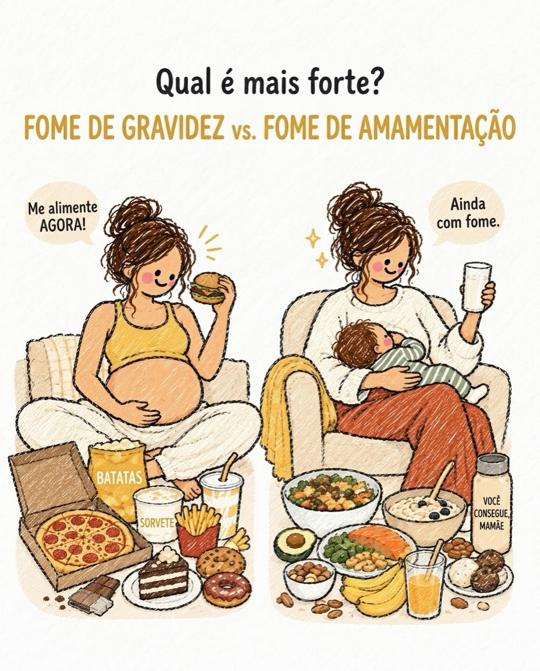
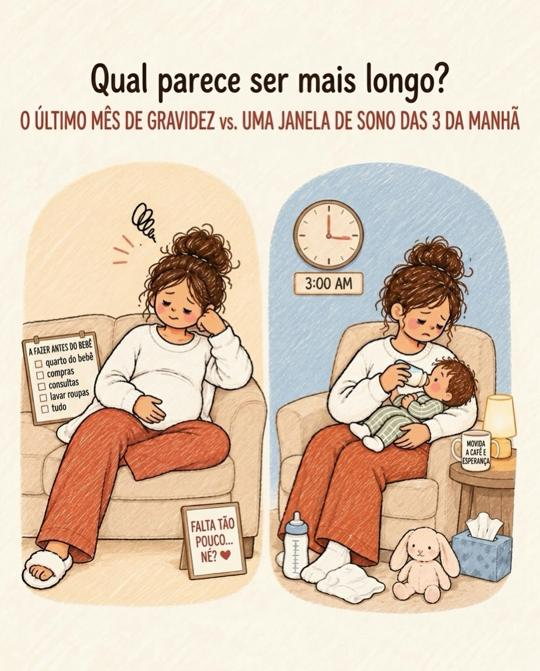
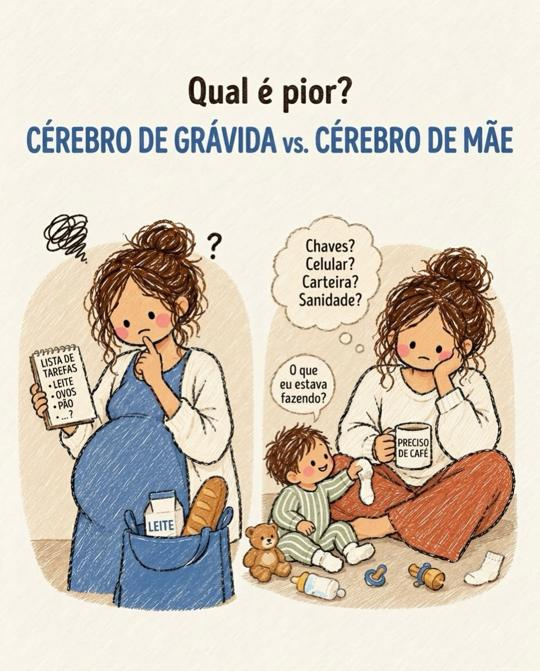
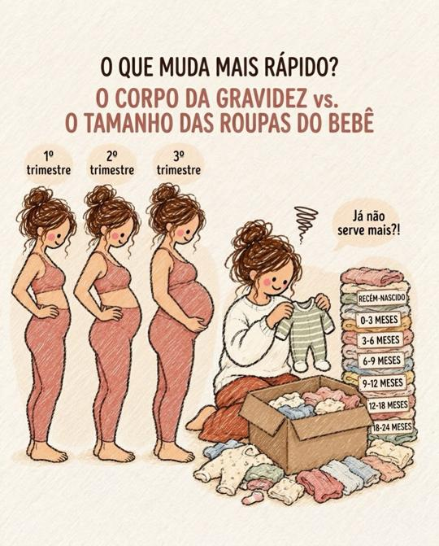
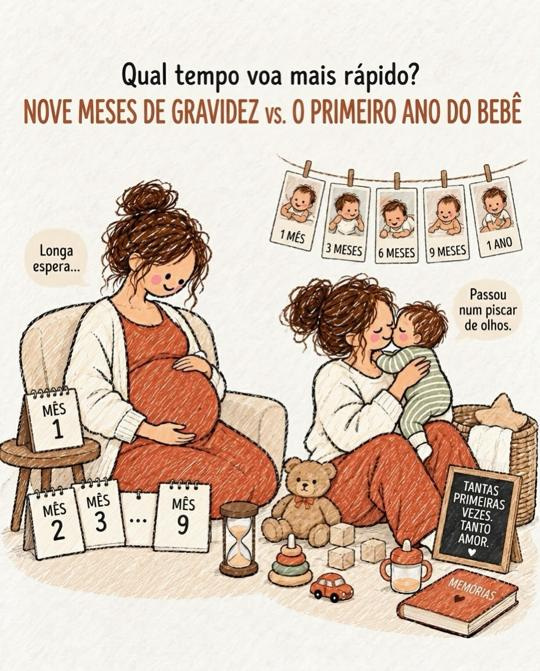
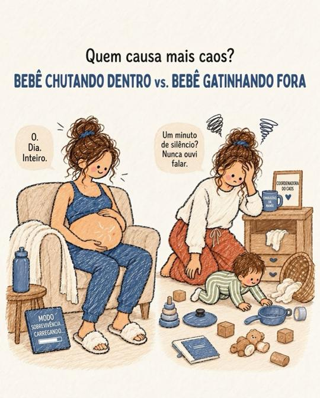
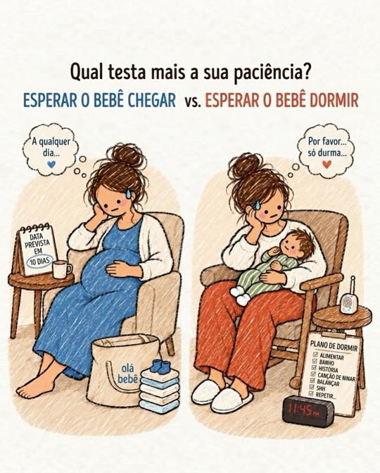
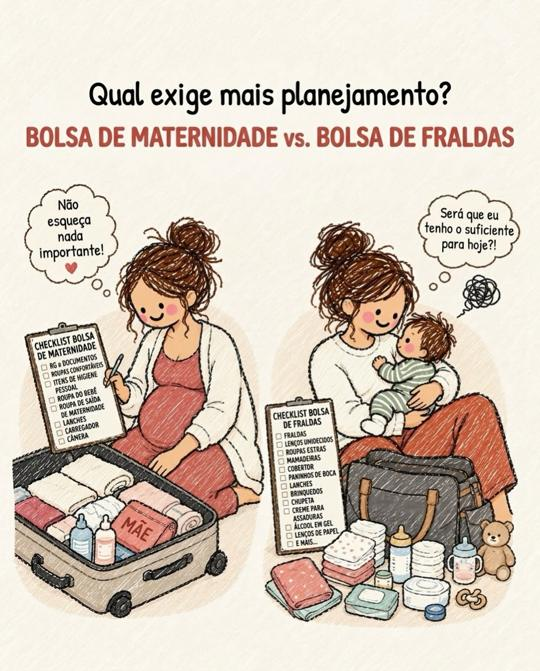
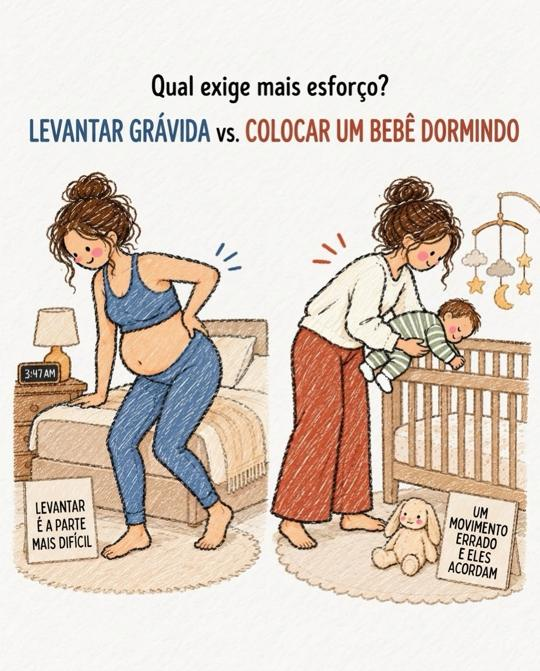
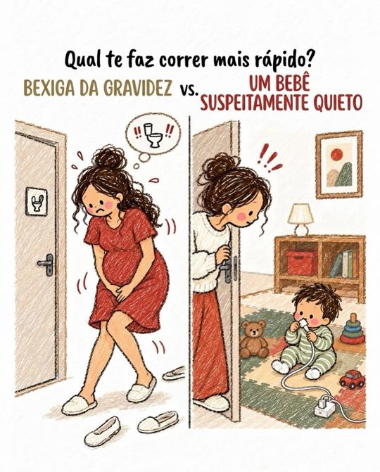
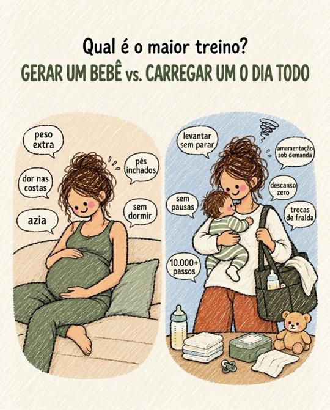
Carrossel com ilustrações comparando momentos e desafios da gestação contra os desafios do pós-parto e maternidade.
- Tema
- humor materno · comparação gestação vs puerpério
- Gancho
- Perguntas de comparação direta ilustradas com extremo carisma, provocando curioisdade imediata sobre como cada lado reflete a realidade da gestante e da mãe.
- Hierarquia
- Pergunta principal em topo com destaque em preto; duas categorias contrastantes em cores distintas (amarelo/azul vs vermelho/marrom); ilustrações lado a lado acompanhadas de balões de texto e etiquetas explicativas.
- Visual
- Fonte sem serifa arredondada e marcante nos títulos; fonte manuscrita acolhedora nos detalhes e placas. ilustração, texto médio.
- Fala
- bem-humorado, empático e acolhedor. “Qual é mais forte?” · “Qual testa mais a sua paciência?” · “E por aí, qual dessas comparações bateu mais forte?”
- CTA
- Pergunta no final da legenda pedindo para as seguidoras comentarem qual comparação foi mais marcante.
- Por que funciona
- A dinâmica de 'Gravidez vs Maternidade' toca em pontos de dor e nostalgia universais das mães. O traço delicado e cômico das ilustrações suaviza o cansaço do puerpério, estimulando o compartilhamento nos stories e nos grupos de mães.
- Versão da Day
- O Manual do Recém-Nascido pode criar uma versão focada em 'Expectativa da Gravidez vs Realidade do Puerpério' voltada exclusivamente para sono e amamentação (ex: 'Achar que o bebê dorme no berço vs Bebê só dorme no colo'), complementando na legenda com orientações educativas da Day.
- Risco Meta
- baixo - O conteúdo aborda dilemas comportamentais e humorísticos da maternidade sem alegações médicas de risco.
Texto de cada lâmina
- 1. capa/gancho Qual é mais forte? FOME DE GRAVIDEZ vs. FOME DE AMAMENTAÇÃO
- 2. desenvolvimento Qual parece ser mais longo? O ÚLTIMO MÊS DE GRAVIDEZ vs. UMA JANELA DE SONO DAS 3 DA MANHÃ
- 3. desenvolvimento Qual merece ser chamado de “sono”? SONO DA GRAVIDEZ vs. SONO DO RECÉM-NASCIDO
- 4. desenvolvimento Qual é pior? CÉREBRO DE GRÁVIDA vs. CÉREBRO DE MÃE
- 5. desenvolvimento O que muda mais rápido? O CORPO DA GRAVIDEZ vs. O TAMANHO DAS ROUPAS DO BEBÊ
- 6. desenvolvimento Qual tempo voa mais rápido? NOVE MESES DE GRAVIDEZ vs. O PRIMEIRO ANO DO BEBÊ
- 7. desenvolvimento Quem causa mais caos? BEBÊ CHUTANDO DENTRO vs. BEBÊ GATINHANDO FORA
- 8. desenvolvimento Qual testa mais a sua paciência? ESPERAR O BEBÊ CHEGAR vs. ESPERAR O BEBÊ DORMIR
- 9. desenvolvimento Qual exige mais planejamento? BOLSA DE MATERNIDADE vs. BOLSA DE FRALDAS
- 10. desenvolvimento Qual exige mais esforço? LEVANTAR GRÁVIDA vs. COLOCAR UM BEBÊ DORMINDO
- 11. desenvolvimento Qual te faz correr mais rápido? BEXIGA DA GRAVIDEZ vs. UM BEBÊ SUSPEITAMENTE QUIETO
Legenda original: Quem aí já se pegou fazendo essas comparações durante a gestação ou nos primeiros meses com o bebê? 🤰🏻➡️👶🏻
A maternidade é uma das jornadas mais intensas, transformadoras e… desafiadoras da vida! Entre a expectativa do barrigão e a realidade da rotina com o recém-nascido, a gente descobre uma força (e uma paciência!) que nem sabia que existia.
Seja lidando com a fome de leão da amamentação, tentando decifrar o “cérebro de grávida”, organizando as roupinhas que parecem encolher da noite para o dia ou contando os minutos nas madrugadas de silêncio (ou de choro!), lembre-se: você está fazendo um trabalho incrível. ❤️✨
Não existe maternidade perfeita, mas existe o seu amor, o seu cuidado e a sua dedicação diária, e isso é mais do que suficiente.
💬 E por aí, qual dessas comparações bateu mais forte? Me conta aqui nos comentários! 👇👇
AcolhimentoD · Frase tipográficaCopiar a hierarquia
Card estático minimalista com frase emocional e espiritual em destaque centralizado.
- Tema
- puerpério · Apego do bebê, desaceleração e culpa materna
- Gancho
- Começar com 'Deus não erra' seguido pela ressignificação do 'bebê grudinho', transformando o cansaço da mãe em um propósito divino de presença.
- Hierarquia
- Texto principal em azul-marinho negrito ocupando o centro da tela; arroba do perfil em tamanho pequeno e tom mais suave na base.
- Visual
- Sans-serif moderna, encorpada (bold), com excelente contraste e legibilidade rápida. sem imagem, texto médio.
- Fala
- Emocional, acolhedor, espiritual e reconfortante.. “Deus não erra.” · “Ele manda os bebês grudinhos...” · “...o valor do tempo que passa depressa e não volta mais.”
- CTA
- Pedir para seguir o perfil para mais conteúdos na legenda.
- Por que funciona
- Ataca diretamente a culpa da mãe moderna que tenta manter a produtividade de antes e sente o bebê como um 'atraso'. Ao transformar o apego em um presente divino para desacelerar, gera alívio imediato, provocando milhares de compartilhamentos em stories.
- Versão da Day
- A Day pode usar essa mesma reflexão em um card minimalista para validar as mães que sofrem com bebês que só dormem no colo, aliando a mensagem acolhedora à explicação de que o apego é fisiológico e essa fase passa.
- Risco Meta
- baixo - reflexão emocional e espiritual sobre maternidade, sem alegações de saúde ou promessas médicas.
Texto de cada lâmina
- 1. capa/gancho Deus não erra. Ele manda os bebês grudinhos justamente para mães que viviam aceleradas, para que aprendam, no colo, o valor do tempo que passa depressa e não volta mais.
Legenda original: O ritmo da vida é um ajuste divino.
Às vezes, a pressa nos cega para o que é essencial. Deus conhece a nossa rotina frenética e, com infinita sabedoria, coloca em nossos braços alguém que exige exatamente o oposto: a pausa.
O apego do seu filho é um convite ao agora. Esse desejo constante de proximidade não é um atraso na sua agenda, é uma aula sobre a finitude dos momentos que nunca mais se repetirão.
A disciplina exige que saibamos priorizar o eterno sobre o urgente. O colo que hoje parece prender é, na verdade, o altar onde você aprende a silenciar o mundo para valorizar a presença.
Acolher essa fase é um exercício profundo de entrega e confiança. Deixe que essa pequena vida desacelere o seu passo, pois é no conforto desse abraço que você encontra o verdadeiro propósito da sua caminhada.
Se essa reflexão fez sentido para você, siga @maternandocomleveza_ para mais conteúdos sobre maternidade consciente, espiritualidade e presença. 🤍
AcolhimentoD · Frase tipográficaCopiar a hierarquia
Imagem estática com frase de reflexão emotiva no topo sobreposta a uma foto carinhosa de um bebê.
- Tema
- puerpério · Sobrecarga, culpa materna e validação do cuidado diário
- Gancho
- Valida uma dor e culpa materna universal (a sensação de 'não ter produzido nada no dia'), gerando identificação e alívio imediato.
- Hierarquia
- Frase de impacto em destaque principal com fonte serifada; indicação discreta para ler a descrição ('desc') e @ de autoria em tamanho menor.
- Visual
- Serifada clássica e elegante, com visual editorial e intimista. foto real, texto pouco.
- Fala
- Empático, acolhedor, vulnerável e reconfortante. “Tem dias que não consigo fazer nada além de...” · “Cuidar de alguém também é fazer alguma coisa” · “Se hoje você só conseguiu ser mãe, não pense que foi pouco”
- CTA
- Pedindo para seguir o perfil (@transbordotrechos) localizado no final da legenda.
- Por que funciona
- Ataca diretamente a culpa materna de forma extremamente sensível e visualmente limpa. A combinação da frase reflexiva com a foto fofa do bebê gera enorme desejo de compartilhamento e salvamento como forma de desabafo e autoacolhimento, explicando as mais de 61 mil curtidas.
- Versão da Day
- A Day pode usar uma frase no mesmo formato visual direcionada ao sono ou livre demanda ('Tem dias que o seu colo é o único lugar do mundo que ele precisa... e tá tudo bem'), unindo o acolhimento emocional à explicação técnica de como esse contato traz segurança pro desenvolvimento do bebê.
- Risco Meta
- baixo - Conteúdo focado em apoio emocional e maternidade real, sem promessas médicas ou alegações de saúde sensíveis.
Texto de cada lâmina
- 1. capa/gancho Tem dias que não consigo fazer nada além de ser mãe, e nesses dias eu percebo o quanto isso já é imenso... desc @transbordotrechos
Legenda original: Existe uma curiosidade interessante sobre a maternidade: cuidar de uma criança exige atenção constante e envolve uma enorme quantidade de tarefas que muitas vezes nem são percebidas como trabalho.
E talvez seja por isso que tantas mães terminem o dia sentindo que “não fizeram nada”.
Não trabalharam fora.
Não conseguiram arrumar tudo.
Não tiveram tempo para si.
Não riscaram metade da lista de tarefas.
Mas deram banho.
Prepararam comida.
Acalmaram um choro.
Responderam mil perguntas.
Deram colo.
Cuidaram.
Ensinaram.
Amaram.
E fizeram tudo isso enquanto tentavam dar conta de tantas outras coisas.
Tem dias em que ser mãe ocupa cada espaço da rotina.
E nesses dias, talvez você precise lembrar que cuidar de alguém também é fazer alguma coisa.
Na verdade, é fazer algo imenso.
Porque nem todo trabalho produz um resultado que podemos colocar em uma lista.
Alguns dos trabalhos mais importantes da vida acontecem no silêncio, no colo, na rotina e nos pequenos cuidados que ninguém aplaude.
Então, se hoje você só conseguiu ser mãe, não pense que foi pouco.
Você esteve presente.
E para uma criança, isso pode significar o mundo inteiro. ❤️
✍🏻 @transbordotrechos
Se esse texto falou com você, siga @transbordotrechos. Talvez essa seja a última vez que o Instagram coloque um dos nossos textos no seu feed.
9@maeefono
38,6k curtidas · 395 comentários · 1 lâmina
AcolhimentoC · Ilustração fofaAdaptar
Ilustração estilo quadrinho em lâmina única mostrando a diferença entre a resposta social da mãe e seu monólogo interno de proteção.
- Tema
- cuidados com o bebê · limites com visitas e higiene do recém-nascido
- Gancho
- Ilustra um dilema e culpa social que quase toda mãe de recém-nascido vive: querer impor limites de higiene sem parecer rude com visitas.
- Hierarquia
- Balão de fala da visita no topo esquerdo, resposta curta da mãe no centro, grande balão de pensamentos à direita detalhando a ansiedade materna, rodapé centralizado com identificação profissional.
- Visual
- Sans-serif arredondada estilo HQ/handwritten. ilustração, texto médio.
- Fala
- vulnerável, preocupado e protetor. “Como digo isso sem parecer grossa?” · “Eu só quero proteger meu bebê.” · “Por trás daquele 'obrigada', pode existir uma mãe preocupada...”
- CTA
- Pergunta na legenda ('Você já ficou sem jeito de falar? Conta aqui 👇') incentivando comentários e compartilhamento.
- Por que funciona
- Atinge em cheio a dor e a ansiedade materna de proteger o bebê de vírus/bactérias. Por usar uma ilustração amigável, alivia a tensão do assunto e faz a mãe se sentir compreendida, gerando muitos salvamentos e compartilhamentos com outras mães e familiares.
- Versão da Day
- O Manual do Recém-Nascido pode adaptar criando uma lista prática ou miniguia de 'Como impor limites para visitas sem criar atritos na família', mantendo a abordagem acolhedora e instruindo a mãe com scripts prontos.
- Risco Meta
- baixo - Aborda etiqueta de visitas e cuidados gerais de higiene sem fazer alegações médicas de diagnóstico ou tratamento.
Texto de cada lâmina
- 1. capa/gancho Ah, seu bebê é tão lindo! / Obrigada! / Meu Deus, protege meu filho... Será que ela está gripada? Lavou as mãos? Tomara que não beije o rostinho nem a mãozinha... Como digo isso sem parecer grossa? Eu só quero proteger meu bebê. / Mãe e Fono / @maeefono • Hellen Castro • Fonoaudióloga • CRFa 5-11572
Legenda original: “É só um beijinho…” Mas você perguntou à mãe? 🥹
Por trás daquele “obrigada”, pode existir uma mãe preocupada com a saúde do bebê e sem jeito de pedir: “Por favor, não beije meu filho.”
Na maternidade, colocar limites também é cuidar. Você pode dizer com carinho:
💗 “Antes de pegar, lave as mãos.”
💗 “Prefiro que não beije o rostinho nem as mãozinhas.”
💗 “Se estiver gripado, vamos deixar a visita para outro dia.”
Você já ficou sem jeito de falar? Conta aqui 👇
Siga @maeefono para acompanhar conteúdos sobre maternidade, amamentação e desenvolvimento infantil, da amamentação à fala.
A INFÂNCIA DO SEU FILHO NÃO TEM REPLAY.
Hellen Castro • Fonoaudióloga • CRFa 5-11572
🎥 Série Maternidade sem Filtro
Humor de identificaçãoB · Meme sobre fotoAdaptar
Carrossel de memes no estilo 'Barbie na Maternidade Real', relacionando imagens engraçadas de bonecas caóticas com situações de exaustão da rotina materna.
- Tema
- humor materno · privação de sono e exaustão materna
- Gancho
- O visual chocante e engraçado da Barbie exausta na cama com o celular, gerando identificação imediata para qualquer mãe que tenta ter tempo livre à noite.
- Hierarquia
- Marca d'água no topo (nome e @ do perfil). Texto do meme na parte inferior em letras amarelas estilizadas com contorno e sombra preta para dar destaque sobre a imagem.
- Visual
- Fonte sem serifa bold arredondada em amarelo com contorno preto grosso. IA, texto pouco.
- Fala
- humorístico, sarcástico e exagerado. “Eu tentando mexer no celular...” · “Durma enquanto o bebê dorme” · “Acordar de madrugada nem mexe mais comigo”
- CTA
- Na legenda: pergunta qual Barbie representa melhor a mãe e direciona para os Stories para dicas de sono.
- Por que funciona
- Usa a estética da Barbie em contraste direto com a bagunça e cansaço da vida real. O formato de memes curtos e diretos tem altíssimo potencial de compartilhamento nos Stories e em grupos de mães no WhatsApp.
- Versão da Day
- O Manual do Recém-Nascido pode usar essa estética de memes visuais para descontrair a audiência antes de vender ou ensinar uma técnica de sono/rotina, conectando a exaustão com a solução técnica oferecida pela Day.
- Risco Meta
- baixo
Texto de cada lâmina
- 1. capa/gancho Eu tentando mexer no celular depois que o bebê dormiu.
- 2. desenvolvimento “Durma enquanto o bebê dorme”.
- 3. desenvolvimento Acordar de madrugada nem mexe mais comigo.
- 4. desenvolvimento É tanto salto de desenvolvimento que parece que estou em uma olimpíada.
- 5. desenvolvimento Cabelo após a maternidade: o que não caiu tá arrepiado.
Legenda original: Me conta aqui, qua dessas Barbies representa melhor a sua maternidade hoje? 😂👇
A maternidade tem muito amor, mas também tem olheiras, cabelo bagunçado, noites mal dormidas e uma mãe tentando dar conta de tudo.
E olha… a gente até ri dessas situações, mas viver exausta todos os dias não precisa ser o normal da sua maternidade. 🤍
Se você quer ajuda com sono do seu bebê, já corre nos meus stories pra ficar por dentro de todas as dicas.
#MaternidadeReal #HumorMaterno #SonoDoBebe
Educativo de consultaE · Foto + caixa de textoSó inspiração
Vídeo curto (Reels) com áudio de fundo em que a profissional aponta para uma tabela visual dividida em duas colunas comparando pomadas recomendadas e a evitar para prevenção diária de assaduras.
- Tema
- cuidados com o bebê · prevenção de assaduras e escolha de pomadas
- Gancho
- Apresenta um dilema visual imediato (ÓTIMO x EVITE) sobre um item do dia a dia do bebê, ativando a curiosidade da mãe sobre estar usando o produto correto ou errado.
- Hierarquia
- Título de topo em destaque com fundo roxo/rosa; Subtítulos em duas colunas identificados com cores e emojis (ÓTIMO ✅ em verde e EVITE ❌ em vermelho); Imagens dos produtos empilhadas verticalmente.
- Visual
- Sans-serif em caixa alta, bold, com caixas de destaque coloridas atrás do texto. foto real, texto médio.
- Fala
- educativo e direto. “Você descobriu que nem toda pomada para assadura é indicada para prevenção.” · “Na hora de escolher, a composição e a finalidade fazem toda diferença!” · “Salve para consultar na próxima troca de fralda!”
- CTA
- Pedir para salvar o post para consultar na próxima troca de fralda (na legenda).
- Por que funciona
- Listas de 'o que usar vs. o que evitar' têm altíssima taxa de salvamento e compartilhamento porque resolvem uma dúvida prática na farmácia de forma imediata e altamente visual.
- Versão da Day
- O Manual do Recém-Nascido pode adaptar fazendo uma tabela comparativa mostrando a diferença entre 'pomadas de barreira diária' vs. 'pomadas de tratamento com medicamento', ensinando quando usar cada uma na rotina do RN.
- Risco Meta
- baixo - Trata-se de orientação estética/cosmética sobre higiene do bebê sem promessa terapêutica ou prescrição medicamentosa restrita.
Texto de cada lâmina
- 1. capa/gancho Pomadas de prevenção de assaduras:
ÓTIMO ✅ | EVITE ❌
[Produtos ÓTIMO: Mustela, Hipoglós Transparente, Bepantol Baby, Huggies, Weleda]
[Produtos EVITE: Nistatina + Óxido de Zinco, Hipoglós Nova Fórmula, Dermodex, Granado]
Legenda original: Você descobriu que nem toda pomada para assadura é indicada para prevenção. 👀
Na hora de escolher, a composição e a finalidade fazem toda diferença!
No vídeo, mostro quais opções podem ser boas para prevenir assaduras e quais prefiro evitar nessa situação.
E lembre: prevenção não depende só da pomada. 💗
Trocar a fralda com frequência, higienizar delicadamente e manter a pele sequinha também são cuidados essenciais.
Salve para consultar na próxima troca de fralda!
12@anaaoqui
24k curtidas · 246 comentários · 1 lâmina vídeo
Humor de identificaçãoA · Print de rede socialSó inspiração
Vídeo curto de um bebê batendo as mãos no teclado de um notebook simulando digitar um e-mail de demissão em nome da mãe.
- Tema
- humor materno · retorno ao trabalho pós-licença maternidade e transição de carreira
- Gancho
- O contraste cômico do bebê 'digitando' no computador com o texto formal de demissão assinado pelo 'novo chefe', gerando conexão instantânea com mães em licença.
- Hierarquia
- Caixa de texto branca retangular no centro da tela com fonte sem serifa na cor preta, destacando termos em caixa alta e divisão em parágrafos simulando uma carta formal.
- Visual
- Sem serifa, limpa, preta, sobre fundo branco com bom contraste. foto real, texto médio.
- Fala
- bem-humorado, irônico e afetuoso. “Prezado trabalho da mamãe...” · “Atenciosamente, o novo chefe dela” · “Não entre em contato com ela NUNCA MAIS.”
- CTA
- Pedir para seguir na legenda para acompanhar como foi a transição de carreira.
- Por que funciona
- Aborda uma dor real e profunda das mães (a culpa e ansiedade do fim da licença-maternidade) usando o humor e a fofura do bebê. Isso estimula alto volume de compartilhamentos com outras mães e no WhatsApp.
- Versão da Day
- O Manual do Recém-Nascido pode usar um vídeo de um bebê 'digitando' ou 'mexendo no celular' simulando um recado humorístico para os palpiteiros da família ou sobre a rotina de sono do bebê, conectando na legenda com dicas práticas de adaptação da rotina materna.
- Risco Meta
- baixo - O post aborda humor e dilemas de carreira/maternidade, sem alegações de saúde ou promessas médicas.
Texto de cada lâmina
- 1. capa/gancho Prezado trabalho da mamãe,
A mamãe não vai voltar depois da licença-maternidade. Ela encontrou uma vida nova e melhor, me dando colo e trocando minha fralda. Não entre em contato com ela NUNCA MAIS.
Atenciosamente,
o novo chefe dela
Legenda original: Se o meu bebê soubesse digitar, esse e-mail tinha saído 😂
A verdade é que eu também não queria voltar. Eu queria trabalhar, só não queria passar o dia inteiro longe dele.
Foi por isso que fui procurar trabalho pra empresas de fora, pela internet. Hoje trabalho de casa, com ele do lado.
Me segue que eu vou contando como foi o meu caminho.
Humor de identificaçãoC · Ilustração fofaCopiar a hierarquia
Meme em imagem única dividida em dois quadros ilustrados comparando a amamentação de recém-nascido com a amamentação de criança maior.
- Tema
- amamentação · amamentação prolongada e acrobacias do bebê no peito
- Gancho
- Comparação visual cômica e hiper-relacionável da 'marmotagem' e ginástica que os bebês maiores fazem ao mamar.
- Hierarquia
- Tarjas brancas horizontais com texto serifado centralizado sobrepostas na parte inferior de cada um dos dois quadros da ilustração.
- Visual
- Serifada clássica, elegante, com caixa baixa e inicial maiúscula.. ilustração, texto pouco.
- Fala
- humorístico, leve e nostálgico. “Como começou: / Como estamos:” · “Comenta há quantos anos você amamenta”
- CTA
- Comentar na legenda (pedindo para contar há quantos anos/meses amamenta).
- Por que funciona
- Ativa o gatilho da identificação imediata nas mães que amamentam bebês maiores, gerando alto índice de salvamento, envio para amigas mães e comentários orgânicos compartilhando a própria experiência.
- Versão da Day
- A Day pode usar esse mesmo conceito visual ou em formato Reels/foto própria mostrando a 'ginástica olímpica' do bebê no peito, conectando na legenda com o comportamento do bebê maior, livre demanda e como lidar com o sono nessa fase.
- Risco Meta
- baixo - Conteúdo humorístico e de estilo de vida materno sem alegações médicas restritas.
Texto de cada lâmina
- 1. capa/gancho Como começou:
Como estamos:
Legenda original: Comenta há quantos anos você amamenta👇🏻💛
.
.
.
.
Créditos à imagem original: @creciendo_conmama
AcolhimentoC · Ilustração fofaCopiar a hierarquia
Infográfico ilustrado em imagem única que lista os cuidados diários com o bebê para desconstruir a sensação de improdutividade e culpa materna.
- Tema
- puerpério · culpa materna e carga mental
- Gancho
- Toca direto na dor visceral do puerpério: a sensação de término do dia sem ter produzido nada 'visível' na casa/trabalho.
- Hierarquia
- Título principal em caixa alta dentro de um bloco colorido de destaque; subtítulo em fonte menor centralizada; 5 ilustrações com textos curtos descritivos abaixo de cada uma; logotipo e assinatura no rodapé.
- Visual
- Título principal em fonte sem serifa condensada em caixa alta; corpo do texto em fonte sem serifa arredondada e legível; assinatura final em script/manuscrita.. ilustração, texto pouco.
- Fala
- empático, acolhedor e reassegurador. “Antes de se sentir culpada...” · “Lembre-se que você...” · “Cuidar do seu bebê também é fazer muita coisa.”
- CTA
- Legenda convida à autorreflexão e gentileza consigo mesma ('Respire fundo e seja gentil consigo mesma'), estimulando compartilhamento para outras mães.
- Por que funciona
- Normaliza o esgotamento do puerpério e dá valor ao trabalho invisível do cuidado diário. O alto volume de curtidas/salvamentos acontece porque funciona como uma validação emocional diária que a mãe precisa ouvir.
- Versão da Day
- A Day pode adaptar para um post carrossel visualmente leve intitulado 'O que você produziu hoje (mesmo achando que não fez nada)', detalhando a rotina de sono e amamentação como grandes conquistas da mãe.
- Risco Meta
- baixo - conteúdo focado em saúde mental/emocional materna sem alegações médicas ou promessas de cura.
Texto de cada lâmina
- 1. capa/gancho ANTES DE SE SENTIR CULPADA por ''não ter feito muita coisa'' hoje, lembre-se que você...
Amamentou o bebê
Trocou várias fraldas
Acalmou o bebê
Fez o bebê dormir
Brincou com o bebê
Legenda original: Amamentar, trocar fraldas, acalmar o choro, fazer dormir, brincar… tudo isso importa, mas você não precisa dar conta de tudo o tempo inteiro.
Às vezes, o dia parece ter passado em um piscar de olhos. Você não conseguiu fazer tudo o que planejou, a casa continua bagunçada e talvez tenha ficado com a sensação de que poderia ter feito mais.
Mas pare um instante e lembre-se: cuidar do seu bebê também é fazer muita coisa. ❤️
O colo que você oferece, o conforto que proporciona, o carinho e a segurança que transmite também são formas de cuidado.
Você não precisa ser uma mãe perfeita. Seu bebê precisa de cuidado, vínculo e amor, e você também merece acolhimento nessa fase.
Respire fundo e seja gentil consigo mesma. Você está aprendendo, se adaptando e fazendo o melhor que pode, um dia de cada vez. 🤎
#maternidade #mae #mãe #gestante #bebe
Educativo de consultaE · Foto + caixa de textoAdaptar
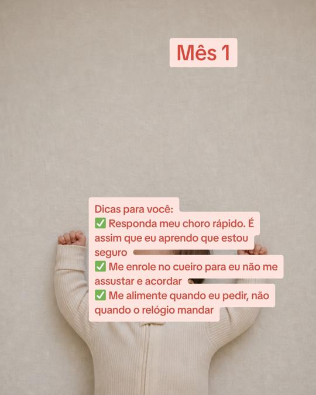
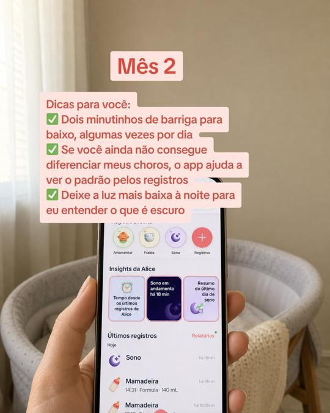
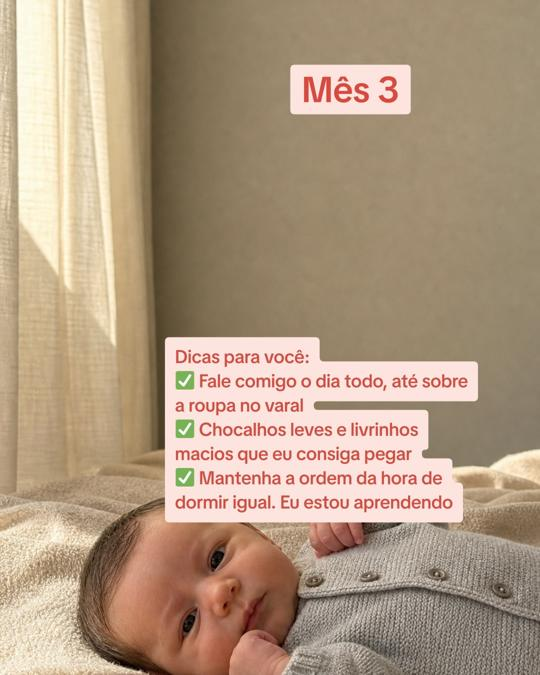
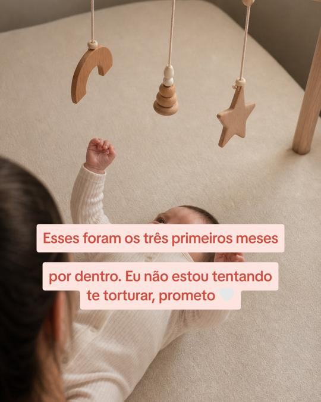
Carrossel educativo em tom humanizado narrado na perspectiva do bebê (1ª pessoa), detalhando marcos de desenvolvimento e dicas do 1º ao 3º mês.
- Tema
- desenvolvimento · desenvolvimento do bebê de 0 a 3 meses
- Gancho
- Promete revelar o pensamento 'real' do bebê durante a fase mais exaustiva (0 a 3 meses), despertando curiosidade e conexão emocional imediata com mães recentes.
- Hierarquia
- Caixas de texto arredondadas em tom rosa claro simulando blocos/pop-ups sobre a foto. No topo das lâminas internas fica a tag do mês ('Mês 1', 'Mês 2', etc.), seguida pelos blocos categorizados ('O que eu amo', 'O que eu estou fazendo', 'Dicas para você') com títulos em destaque e listas com bullet points ou ícones de check verde.
- Visual
- Sans-serif moderna, arredondada e limpa. Destaque em caixa alta bold na capa e nos títulos das seções.. foto real, texto médio.
- Fala
- doce, empático, acolhedor e levemente brincalhão. “O que eu amo:” · “O que eu estou fazendo:” · “Eu não estou tentando te torturar, prometo 🤍”
- CTA
- Pedida de compartilhamento explícita na legenda ('Manda pra alguém que precisa ler isso ❤️').
- Por que funciona
- O uso do ponto de vista do bebê humaniza o comportamento do recém-nascido (choro, necessidade de colo, acordares noturnos), tirando a culpa da mãe e gerando alívio emocional. A estética clean e moderna atrai o público das redes e a estrutura em blocos facilita a leitura rápida e o compartilhamento no direct.
- Versão da Day
- A Day pode usar o mesmo formato de 'mensagem do bebê', mas agregando o embasamento técnico do Manual do Recém-Nascido sobre janelas de sono e amamentação em livre demanda. A capa poderia ser 'O que o seu bebê de 0 a 3 meses quer te dizer sobre o sono dele' para direcionar à autoridade técnica do perfil.
- Risco Meta
- baixo - Conteúdo informativo e de apoio sobre desenvolvimento infantil e maternidade, sem promessas de cura ou tratamentos médicos.
Texto de cada lâmina
- 1. capa/gancho O que o seu bebê ESTÁ REALMENTE pensando a cada mês
(0 a 3 meses)
- 2. desenvolvimento Mês 1
O que eu amo:
• Ficar apertadinho no colo, ouvindo o seu coração
• A sua voz. Eu já conhecia antes de te ver
• Mamar na hora que eu peço
O que eu estou fazendo:
• Dormindo 16 a 18 horas por dia, em pedaços pequenos
• Mamando 8 a 12 vezes. Minha barriguinha é do tamanho de uma cereja
• Chorar é a minha única forma de dizer fome, frio e colo
- 3. desenvolvimento Mês 1
Dicas para você:
✅ Responda meu choro rápido. É assim que eu aprendo que estou seguro
✅ Me enrole no cueiro para eu não me assustar e acordar
✅ Me alimente quando eu pedir, não quando o relógio mandar
- 4. desenvolvimento Mês 2
O que eu amo:
• Seu rosto bem pertinho. Agora eu consigo te ver direito
• Ser conversado. Eu estou tentando responder com sons
• O carrinho. Se mover é a minha coisa favorita
O que eu estou fazendo:
• Levantando a cabeça por um segundo na hora de bruços
• Sorrindo de propósito para você com seis semanas
• Choros diferentes para coisas diferentes, se você prestar atenção
- 5. desenvolvimento Mês 2
Dicas para você:
✅ Dois minutinhos de barriga para baixo, algumas vezes por dia
✅ Se você ainda não consegue diferenciar meus choros, o app ajuda a ver o padrão pelos registros
✅ Deixe a luz mais baixa à noite para eu entender o que é escuro
- 6. desenvolvimento Mês 3
O que eu amo:
• Sorrir de volta para você. É meu jogo favorito
• Ser segurado de pé para ver o mundo grande
• Virar a cabeça para achar de onde vem a música
O que eu estou fazendo:
• Sustentando a cabeça por mais tempo
• Tentando alcançar coisas e errando na maior parte das vezes
• Tendo pequenos humores e deixando você saber
- 7. desenvolvimento Mês 3
Dicas para você:
✅ Fale comigo o dia todo, até sobre a roupa no varal
✅ Chocalhos leves e livrinhos macios que eu consiga pegar
✅ Mantenha a ordem da hora de dormir igual. Eu estou aprendendo
- 8. resumo Esses foram os três primeiros meses por dentro. Eu não estou tentando te torturar, prometo 🤍
Legenda original: Manda pra alguém que precisa ler isso ❤️
#maternidade #maternidadereal #recemnascido #maedeprimeiraviagem
Humor de identificaçãoB · Meme sobre fotoCopiar a hierarquia
Carrossel de 2 lâminas no estilo 'quebra de expectativa' (clickbait do bem), prometendo dicas na capa e entregando uma brincadeira na segunda imagem.
- Tema
- humor materno · amamentação de madrugada e sono do bebê
- Gancho
- Toca direto em uma das maiores dores da maternidade recente (privação de sono e amamentação na madrugada), criando curiosidade imediata para ver as dicas.
- Hierarquia
- Texto principal em caixa alta de alto contraste na capa; tarja preta de destaque com texto de piada na segunda lâmina.
- Visual
- Sans-serif bold em caixa alta (capa) e sans-serif em caixa de texto preta arredondada (lâmina 2). foto real, texto pouco.
- Fala
- humorístico e brincalhão nas imagens, transicionando para acolhedor e técnico na legenda. “Por que passou para o lado, sua traidora!” · “Mas existe algo importante por trás dessa brincadeira.” · “Ensinar um bebê a dormir não significa deixar de amamentar”
- CTA
- Pedida para seguir o perfil @doutorasdoberco e compartilhar com outra mãe; localizado no final da legenda.
- Por que funciona
- Usa o mecanismo do meme fofo de bebê para gerar forte identificação e compartilhamento nos stories/directs. A legenda aproveita a atenção capturada pelo humor para entregar um conteúdo educativo denso sobre associação de sono e fisiologia.
- Versão da Day
- Day usaria uma foto/vídeo fofo de recém-nascido com a mesma quebra de expectativa e, na legenda, explicaria como identificar se o despertar noturno é fome real ou necessidade de apoio para adormecer, conectando com a rotina do recém-nascido.
- Risco Meta
- baixo - post com foco em humor materno e orientações educativas gerais sobre sono e amamentação, sem promessa médica drástica.
Texto de cada lâmina
- 1. capa/gancho Dicas para não dar o peito de madrugada
- 2. virada Por que passou para o lado, sua traidora! 🤷🏻♀️🤣
Legenda original: Ela estava dormindo tão bem.
Até a mãe cometer o maior dos crimes: colocar o bebê no berço e tentar dormir também. 😂
Mas existe algo importante por trás dessa brincadeira.
Nos primeiros meses, muitos bebês ainda precisam mamar durante a madrugada. E isso é esperado.
O que nem sempre é necessário é que toda vez que o bebê desperta, ele precise do peito para voltar a dormir.
Despertar durante a noite faz parte da fisiologia do sono. Mas, dependendo da idade e do desenvolvimento, o bebê também pode começar a construir outras formas de adormecer. Sabia que a partir de 4/5 m a maioria dos bebês é capaz de longos estirões de sono a noite sem precisar amamentar?
E aqui está a diferença que muitas famílias desconhecem.
Ensinar um bebê a dormir não significa deixar de amamentar, ignorar o choro ou retirar o acolhimento.
Significa compreender suas necessidades e, gradualmente, ampliar as maneiras pelas quais ele consegue adormecer.
Porque o peito pode continuar sendo alimento, conforto e conexão, sem necessariamente ser a única forma de voltar a dormir.
E tudo isso começa com conhecimento sobre o sono infantil.
💗 Segue as @doutorasdoberco para aprender, com base na ciência, como ajudar seu bebê a dormir bem no berço, respeitando a idade e o desenvolvimento dele.
Compartilha com uma mãe que vai rir desse carrossel, mas também precisa conhecer essa diferença.
Educativo de consultaE · Foto + caixa de textoAdaptar
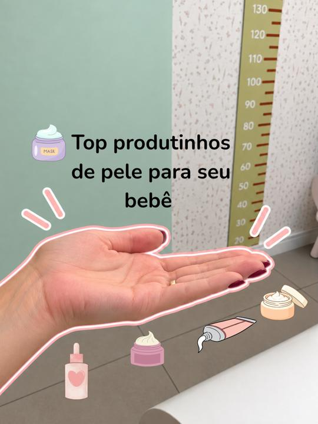
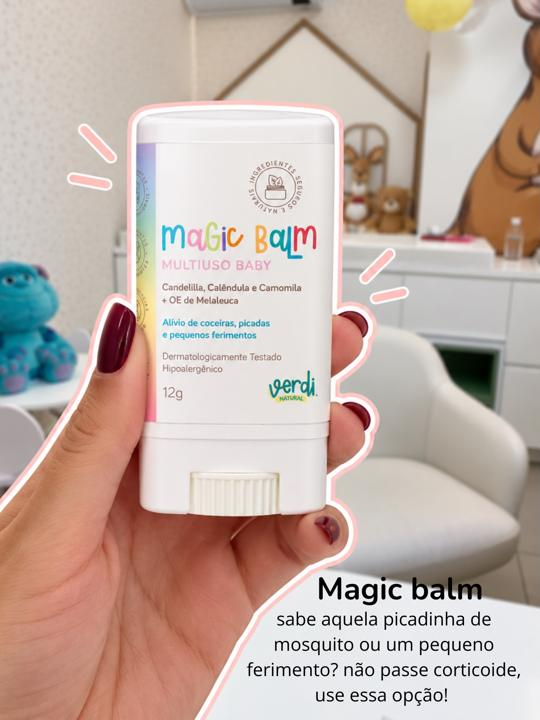
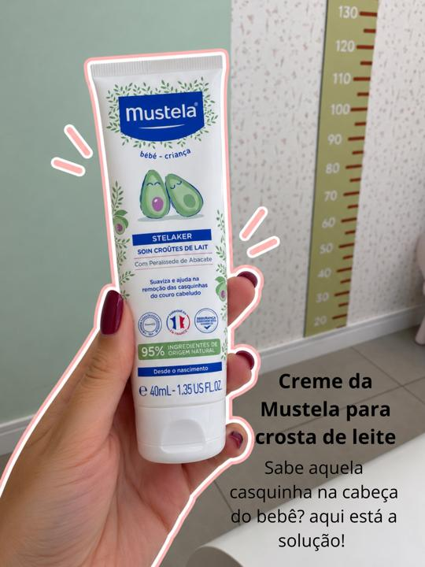
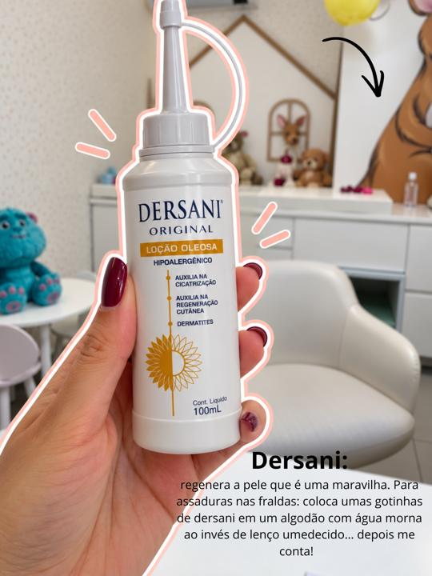
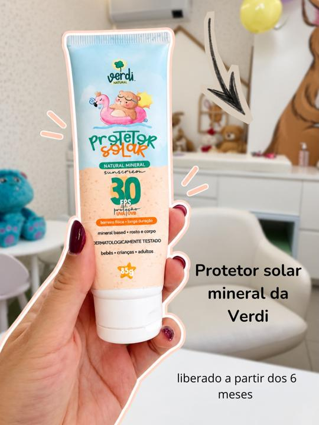
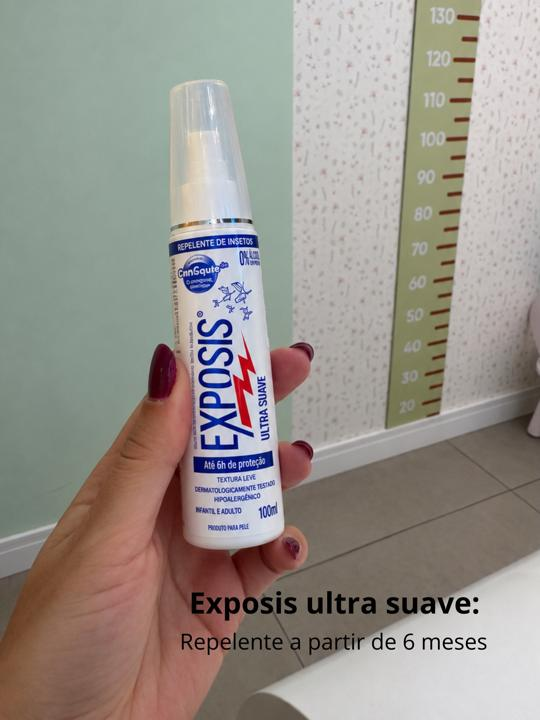
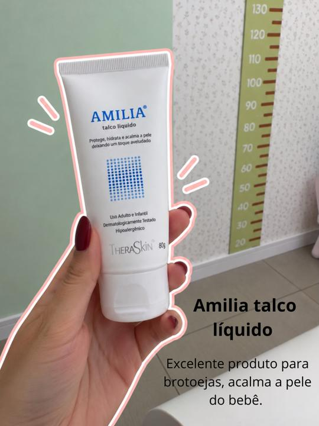
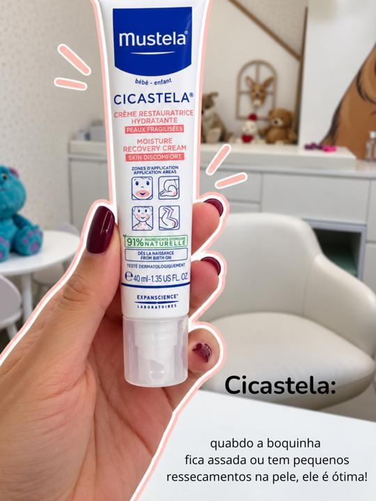
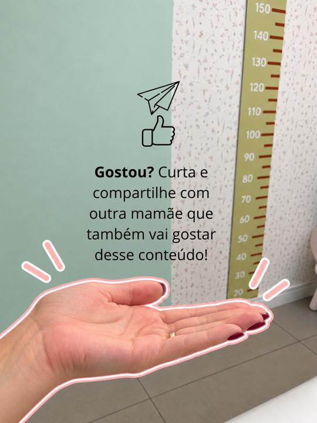
Carrossel no formato guia de produtos recomendados para cuidados específicos com a pele do bebê.
- Tema
- cuidados com o bebê · skincare e produtos de higiene/cuidados infantis
- Gancho
- Promete indicar os 'Top produtinhos de pele para seu bebê' em uma imagem inicial limpa com a mão aberta esperando as recomendações.
- Hierarquia
- Produto real centralizado segurado pela mão com contorno rosa vibrante; título curto do produto em negrito no canto inferior direito; texto explicativo/dica de uso em tamanho menor logo abaixo.
- Visual
- Fonte sem serifa arredondada, limpa e moderna em tom preto/escuro.. foto real, texto pouco.
- Fala
- Amigável, prático, direto e com autoridade profissional.. “sabe aquela...?” · “aqui está a solução!” · “depois me conta!”
- CTA
- Pede para curtir e compartilhar com outra mamãe, localizado na última lâmina e complementado no texto da legenda.
- Por que funciona
- Oferece indicações claras e diretas de marcas consagradas para problemas muito comuns do dia a dia da maternidade (brotoeja, picada de inseto, crosta de leite). A apresentação com foto do produto real segurado pela médica passa confiança imediata e estimula muito o salvamento para consulta em momentos de compra.
- Versão da Day
- O Manual do Recém-Nascido poderia adaptar para 'Produtinhos essenciais para a pele do recém-nascido no primeiro mês', mostrando itens de higiene e prevenção de assaduras recomendados para a pele delicada do RN com dicas práticas da Day.
- Risco Meta
Texto de cada lâmina
- 1. capa/gancho Top produtinhos de pele para seu bebê
- 2. desenvolvimento Magic balm
sabe aquela picadinha de mosquito ou um pequeno ferimento? não passe corticoide, use essa opção!
- 3. desenvolvimento Creme da Mustela para crosta de leite
Sabe aquela casquinha na cabeça do bebê? aqui está a solução!
- 4. desenvolvimento Dersani:
regenera a pele que é uma maravilha. Para assaduras nas fraldas: coloca umas gotinhas de dersani em um algodão com água morna ao invés de lenço umedecido... depois me conta!
- 5. desenvolvimento Protetor solar mineral da Verdi
liberado a partir dos 6 meses
- 6. desenvolvimento Exposis ultra suave:
Repelente a partir de 6 meses
- 7. desenvolvimento Amilia talco líquido
Excelente produto para brotoejas, acalma a pele do bebê.
- 8. desenvolvimento Cicastela:
quabdo a boquinha fica assada ou tem pequenos ressecamentos na pele, ele é ótima!
- 9. cta Gostou? Curta e compartilhe com outra mamãe que também vai gostar desse conteúdo!
Legenda original: Vamos falar sobre pele dos babys e crianças?
Produtos bons, seguros e que eu super indico.
Aqui vai um carrossel cheio de ótimas orientações para vocês! 🎠
.
Com carinho, pedi Isa 💕🦘
Humor de identificaçãoB · Meme sobre fotoAdaptar
Carrossel narrativo usando imagens estilizadas da Barbie em tom irônico para expor as contradições e ambivalências da maternidade.
- Tema
- humor materno · culpa materna, trabalho x maternidade, ambivalência e exaustão
- Gancho
- Usa o formato viral 'o traço mais tóxico de...' combinado com a imagem impactante e cômica da Barbie tirando selfie com incêndio ao fundo.
- Hierarquia
- Texto central em caixa baixa/alta com fonte sans-serif branca em negrito, destacado por linhas de sublinhado brancas acima e abaixo do texto.
- Visual
- Sans-serif geométrica em negrito, branca, com traços sublinhados. IA, texto pouco.
- Fala
- irônico, sincero, autodepreciativo e cômico. “o traço mais tóxico da minha maternidade é” · “quero X mas também quero Y” · “é o meu jeitinho rsrs”
- CTA
- Não há CTA explícito nas lâminas nem na legenda, confiando na alta taxa de compartilhamento e salvamento espontâneo.
- Por que funciona
- Traduz perfeitamente o conflito interno irresolvível e a culpa que a maioria das mães sente entre a carreira, o tempo com os filhos e a necessidade de autocuidado. O uso do meme ameniza a culpa e gera um forte sentimento de 'não estou sozinha', impulsionando o compartilhamento nos stories e grupos de mães.
- Versão da Day
- O Manual do Recém-Nascido pode aplicar a mesma estrutura de meme/contradição narrativa para falar sobre os dilemas do sono do bebê ou amamentação (ex: 'quero que ele durma a noite toda / fico olhando ele dormir com saudade'), mantendo o tom leve e acolhedor característico da Day.
- Risco Meta
Texto de cada lâmina
- 1. capa/gancho o traço mais tóxico da minha maternidade é:
- 2. contexto quero ficar em casa com meu bebê
- 3. desenvolvimento mas também quero trabalhar
- 4. desenvolvimento trabalhar o suficiente pra pagar minhas coisinhas, mas não tantas horas a ponto de perder tempo com meu filho
- 5. virada ao mesmo tempo quero um descanso do meu filho
- 6. virada mas não quero que outra pessoa cuide dele
- 7. resumo é o meu jeitinho rsrs
Legenda original: Como explicar a maternidade? 🥲😫🤣
Educativo de consultaF · Infográfico pastelCopiar a hierarquia
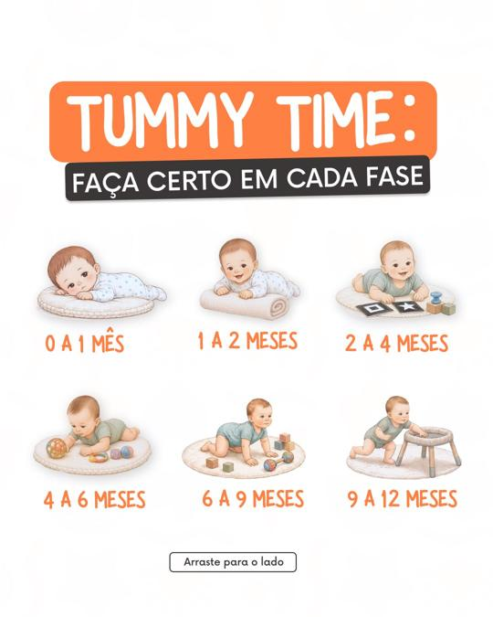
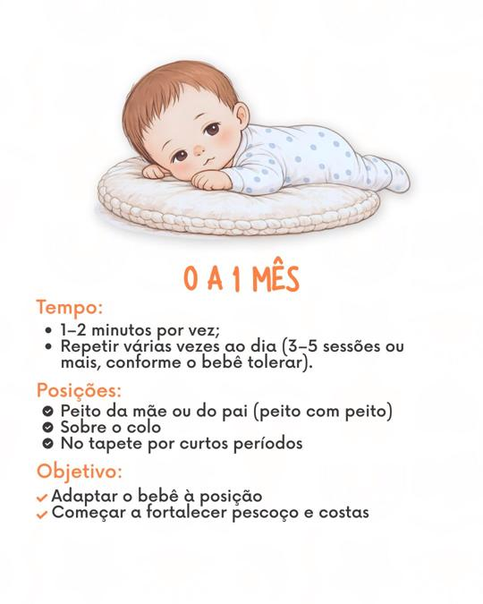
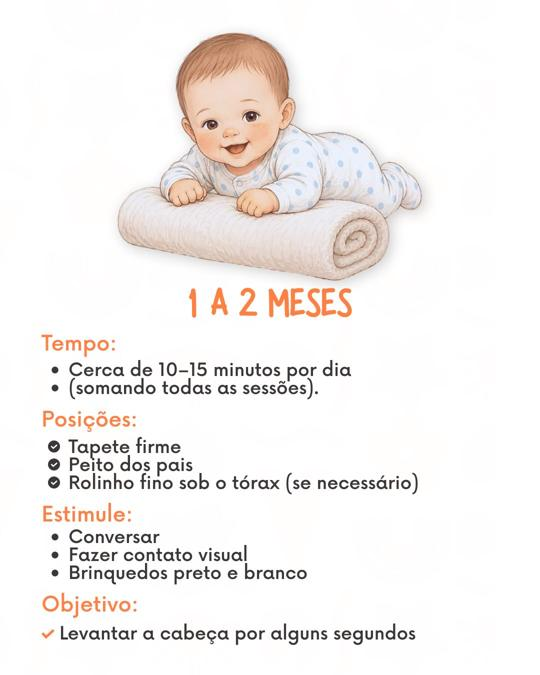
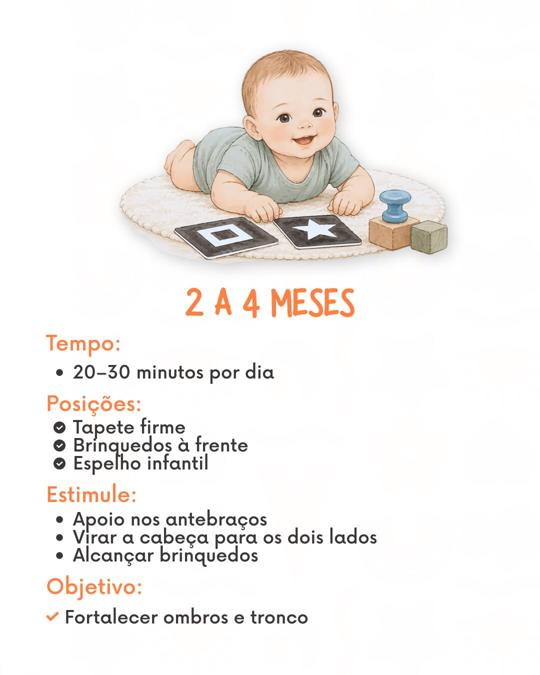
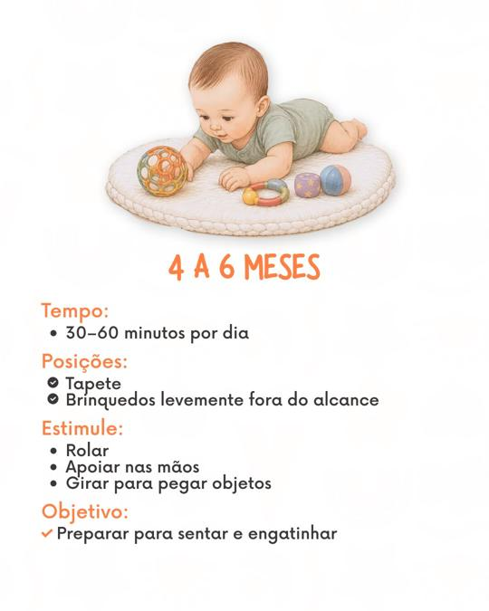
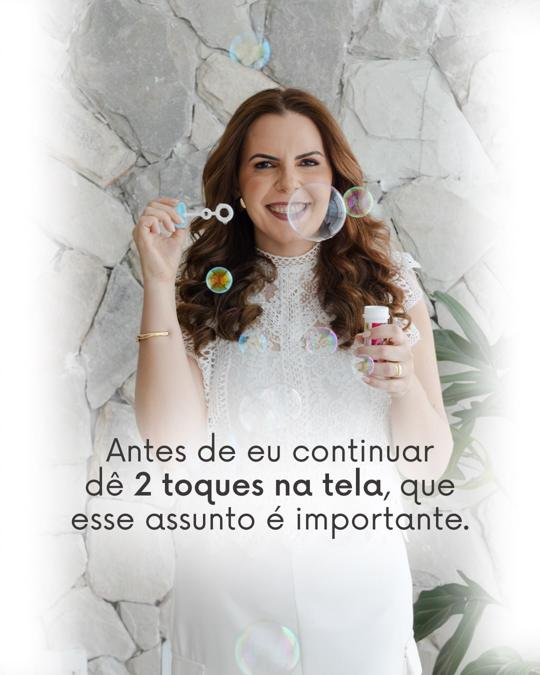
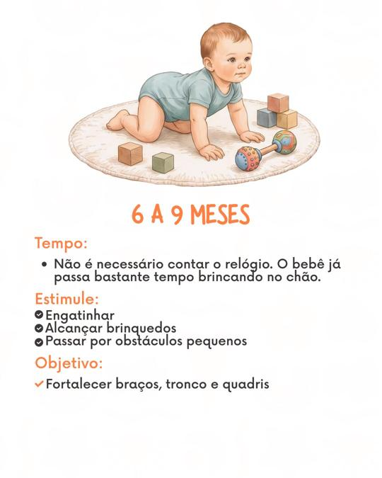
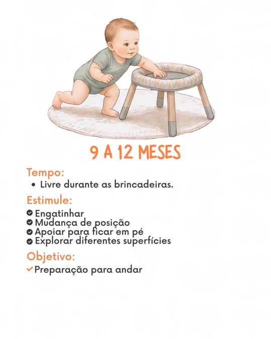
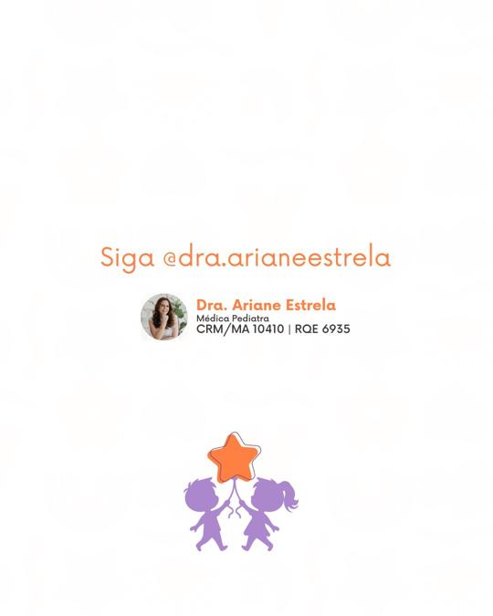
Guia ilustrado por faixa etária (dos 0 aos 12 meses) detalhando tempo, posições, estímulos e objetivos do tummy time para bebês.
- Tema
- desenvolvimento · tummy time e desenvolvimento motor do bebê
- Gancho
- Promessa clara de um guia prático definitivo de Tummy Time por faixa etária acompanhado de ilustrações fofas de bebês que geram identificação instantânea.
- Hierarquia
- Título da fase em destaque colorido (laranja), seguido por subtítulos de seções (Tempo, Posições, Estimule, Objetivo), listas com bullet points e marcadores de checkmark (✔) para rápida visualização.
- Visual
- Sans-serif moderna e arredondada no título e faixa etária; limpa e legível no corpo do texto. IA, texto médio.
- Fala
- didático, orientador e encorajador. “Faça certo em cada fase” · “Antes de eu continuar dê 2 toques na tela” · “Respeite a tolerância do seu bebê”
- CTA
- Na lâmina 6 pede curtida ('dê 2 toques na tela'), na lâmina 9 pede para seguir o perfil, e na legenda orienta salvar para consultar e compartilhar com outras famílias.
- Por que funciona
- Mães buscam respostas muito objetivas sobre quanto tempo e como fazer Tummy Time sem estressar o bebê. A estrutura de guia salvável incentiva muitos salvamentos e compartilhamentos, e o pedido explícito de curtida no meio do carrossel (lâmina 6) eleva a taxa de engajamento.
- Versão da Day
- O Manual do Recém-Nascido usaria o formato para ligar o Tummy Time ao gasto de energia e melhora do sono em cada fase, incluindo dicas práticas de como contornar o choro do bebê na posição e quais brinquedos de estímulo usar em cada mês.
- Risco Meta
- baixo, traz orientações gerais e seguras de desenvolvimento infantil e brincadeiras supervisionadas.
Texto de cada lâmina
- 1. capa/gancho TUMMY TIME: FAÇA CERTO EM CADA FASE
0 A 1 MÊS | 1 A 2 MESES | 2 A 4 MESES | 4 A 6 MESES | 6 A 9 MESES | 9 A 12 MESES
Arraste para o lado
- 2. desenvolvimento 0 A 1 MÊS
Tempo:
• 1–2 minutos por vez;
• Repetir várias vezes ao dia (3–5 sessões ou mais, conforme o bebê tolerar).
Posições:
✔ Peito da mãe ou do pai (peito com peito)
✔ Sobre o colo
✔ No tapete por curtos períodos
Objetivo:
✔ Adaptar o bebê à posição
✔ Começar a fortalecer pescoço e costas
- 3. desenvolvimento 1 A 2 MESES
Tempo:
• Cerca de 10–15 minutos por dia (somando todas as sessões).
Posições:
✔ Tapete firme
✔ Peito dos pais
✔ Rolinho fino sob o tórax (se necessário)
Estimule:
• Conversar
• Fazer contato visual
• Brinquedos preto e branco
Objetivo:
✔ Levantar a cabeça por alguns segundos
- 4. desenvolvimento 2 A 4 MESES
Tempo:
• 20–30 minutos por dia
Posições:
✔ Tapete firme
✔ Brinquedos à frente
✔ Espelho infantil
Estimule:
• Apoio nos antebraços
• Virar a cabeça para os dois lados
• Alcançar brinquedos
Objetivo:
✔ Fortalecer ombros e tronco
- 5. desenvolvimento 4 A 6 MESES
Tempo:
• 30–60 minutos por dia
Posições:
✔ Tapete
✔ Brinquedos levemente fora do alcance
Estimule:
• Rolar
• Apoiar nas mãos
• Girar para pegar objetos
Objetivo:
✔ Preparar para sentar e engatinhar
- 6. virada Antes de eu continuar dê 2 toques na tela, que esse assunto é importante.
- 7. desenvolvimento 6 A 9 MESES
Tempo:
• Não é necessário contar o relógio. O bebê já passa bastante tempo brincando no chão.
Estimule:
✔ Engatinhar
✔ Alcançar brinquedos
✔ Passar por obstáculos pequenos
Objetivo:
✔ Fortalecer braços, tronco e quadris
- 8. desenvolvimento 9 A 12 MESES
Tempo:
• Livre durante as brincadeiras.
Estimule:
✔ Engatinhar
✔ Mudança de posição
✔ Apoiar para ficar em pé
✔ Explorar diferentes superfícies
Objetivo:
✔ Preparação para andar
- 9. cta Siga @dra.arianeestrela
Dra. Ariane Estrela
Médica Pediatra
CRM/MA 10410 | RQE 6935
Legenda original: O tummy time começa muito antes de o bebê engatinhar, e cada fase tem o seu tempo.
Desde os primeiros dias, alguns minutos de barriga para baixo, sempre acordado e supervisionado, ajudam o bebê a fortalecer pescoço, ombros, tronco e quadris. Aos poucos, ele ganha mais controle para rolar, sentar, engatinhar e explorar o mundo.
Comece com períodos curtos, respeite a tolerância do seu bebê e transforme esse momento em conexão: no colo, no tapete firme, com conversa, brinquedos ou espelho.
Lembre-se: tummy time é para o bebê acordado. Para dormir, a posição segura continua sendo sempre de barriga para cima.
Salve este carrossel para consultar cada fase e compartilhe com uma família que está vivendo os primeiros meses do bebê.🌟❤️
AcolhimentoE · Foto + caixa de textoAdaptar
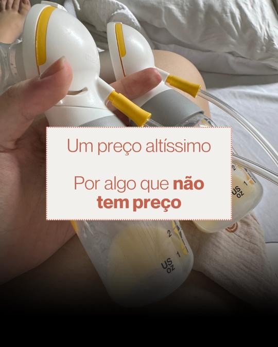
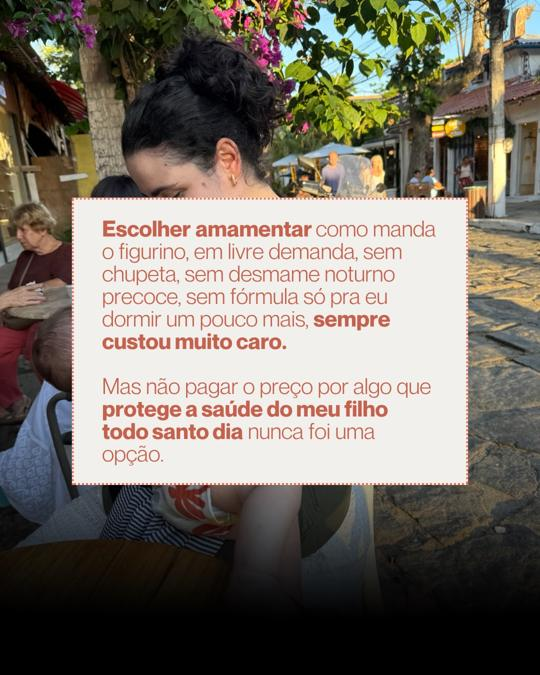
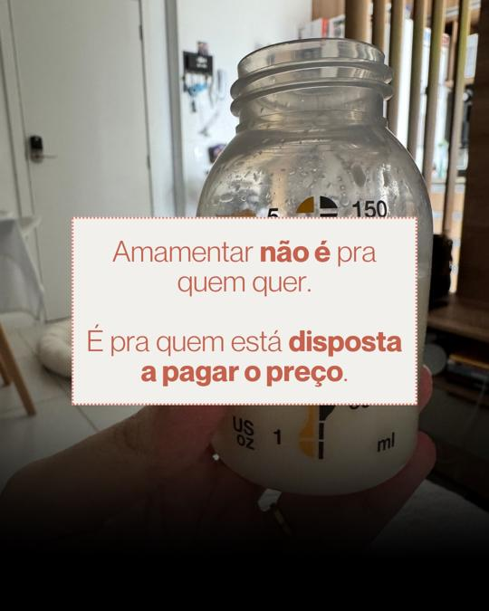
Carrossel narrativo que constrói expectativa listando renúncias pessoais para revelar a amamentação e defender o sacrifício envolvido.
- Tema
- amamentação · renúncias da amamentação / livre demanda / desabafo de mãe
- Gancho
- Cria expectativa utilizando o conceito de 'preço/compra cara' para atrair a curiosidade sobre um gasto financeiro, para então revelar uma metáfora sobre os sacrifícios da maternidade.
- Hierarquia
- Lâminas de transição usam fundo terracota minimalista com texto branco grande. Capa e lâminadas finais usam fotos de bastidores com caixas de texto flutuantes beges, palavras de destaque em negrito e tom terroso.
- Visual
- Sans-serif moderna, peso regular para contextualização e bold/caixa alta para dar ênfase emotiva às palavras-chave.. foto real, texto pouco.
- Fala
- vulnerável, firme, reflexivo e determinado. “Quanto custou a coisa mais...” · “Nunca mais...” · “Amamentar não é pra quem quer.”
- CTA
- Não possui CTA explícito na imagem nem na legenda, apostando no impacto emocional e na identificação para gerar compartilhamentos e comentários orgânicos.
- Por que funciona
- Gera forte identificação ao verbalizar abdicações reais que a mãe faz durante o aleitamento. O tom contundente e sem rodeios valida o sofrimento do processo enquanto exalta o valor do leite materno, dividindo opiniões e gerando debates apaixonados nos comentários.
- Versão da Day
- O Manual do Recém-Nascido poderia adaptar trazendo a perspectiva do sono e da saúde mental da mãe: reconhecer o custo alto do aleitamento sem julgar as mães que precisam de fórmula ou desmame, combinando o acolhimento técnico sobre manejo de amamentação com o alívio da culpa materna.
- Risco Meta
- baixo - Trata-se de um desabafo/relato pessoal sobre aleitamento materno e escolhas individuais, sem violar as diretrizes de saúde da plataforma.
Texto de cada lâmina
- 1. capa/gancho Quanto custou a coisa mais CARA que eu já comprei na vida
- 2. desenvolvimento Nunca mais dormir uma noite inteira
- 3. desenvolvimento Nunca mais tomar remédios que funcionavam bem pra mim
- 4. desenvolvimento Nunca mais sair de casa sozinha
- 5. desenvolvimento Nunca mais usar minhas roupas preferidas
- 6. virada Um preço altíssimo Por algo que não tem preço
- 7. desenvolvimento Escolher amamentar como manda o figurino, em livre demanda, sem chupeta, sem desmame noturno precoce, sem fórmula só pra eu dormir um pouco mais, sempre custou muito caro.
Mas não pagar o preço por algo que protege a saúde do meu filho todo santo dia nunca foi uma opção.
- 8. resumo Amamentar não é pra quem quer.
É pra quem está disposta a pagar o preço.
Legenda original: Não se paga em dinheiro. Não se compra em farmácia. A coisa mais cara que eu já comprei na vida e a única que eu, sem nenhuma dúvida, nunca vou me arrepender.
Amamentar uma criança não é pra quem quer. Não é pra quem tem mais tempo ou dinheiro. É pra quem está disposta a pagar o preço.
Educativo de consultaF · Infográfico pastelAdaptar
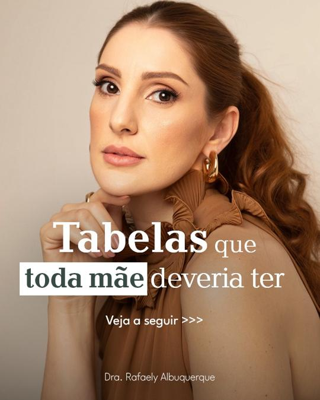
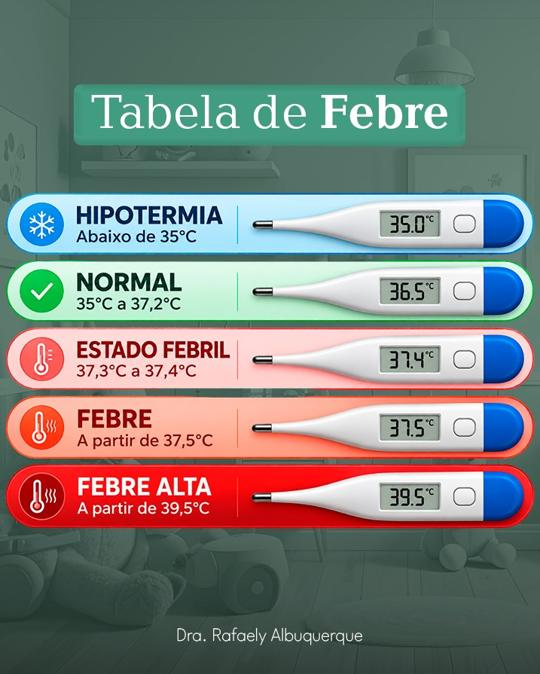
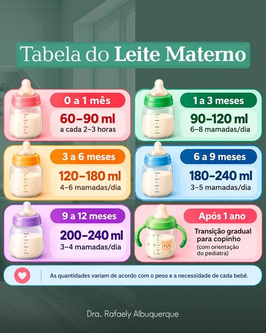
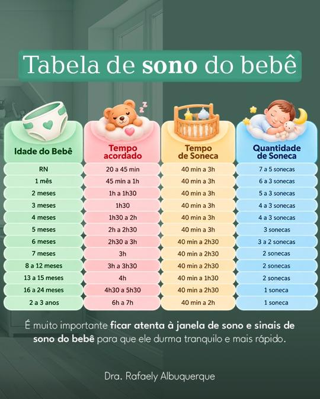
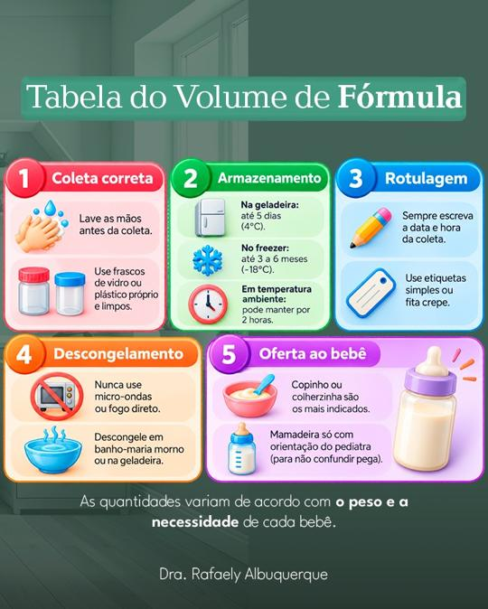
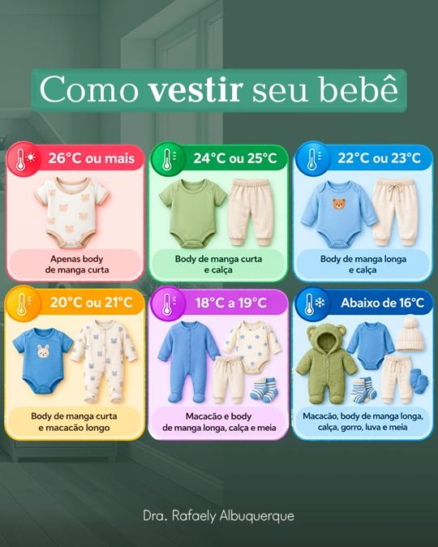
Carrossel informativo estilo 'super guia utilitário' reunindo tabelas visuais de rápida consulta sobre os principais cuidados com o bebê.
- Tema
- cuidados com o bebê · tabelas de consulta rápida (febre, sono, mamadas, conservação de leite e vestuário)
- Gancho
- Promessa utilitária imediata de entregar 'guias prontos' ('Tabelas que toda mãe deveria ter') respaldados por uma profissional de saúde na capa.
- Hierarquia
- Título principal no topo dentro de banner arredondado; blocos temáticos organizados por cores e ícones 3D; texto em destaque para números/valores e aviso de rodapé institucional com assinatura médica.
- Visual
- Títulos institucionais em fonte Serif elegante (estilo editorial) e textos das tabelas em Sans-Serif moderna e altamente legível.. Ilustrações 3D vetorizadas ultra-detalhadas combinadas com fotografia profissional da médica na capa e slide final., texto muito.
- Fala
- instrutivo, técnico, didático e direto. “Tabelas que toda mãe deveria ter” · “As quantidades variam de acordo com o peso e a necessidade de cada bebê.” · “Gostou do conteúdo? Compartilhe!”
- CTA
- Pede compartilhamento no último slide e incentiva a salvar e compartilhar na legenda.
- Por que funciona
- Funciona excepcionalmente bem porque transforma dúvidas frequentes e complexas do dia a dia materno em infográficos simples, bonitos e de fácil consulta. Esse formato gera uma taxa altíssima de salvamentos e envios para grupos de mães.
- Versão da Day
- O Manual do Recém-Nascido pode replicar essa estrutura criando guias visuais com a identidade visual própria (tons terrosos/suaves), mantendo a densidade de informação mas focando na praticidade de rotina sob a ótica de educadora de sono/amamentação.
- Risco Meta
Texto de cada lâmina
- 1. capa/gancho Tabelas que toda mãe deveria ter
Veja a seguir >>>
Dra. Rafaely Albuquerque
- 2. desenvolvimento Tabela de Febre
HIPOTERMIA Abaixo de 35°C (35.0°C)
NORMAL 35°C a 37,2°C (36.5°C)
ESTADO FEBRIL 37,3°C a 37,4°C (37.4°C)
FEBRE A partir de 37,5°C (37.5°C)
FEBRE ALTA A partir de 39,5°C (39.5°C)
Dra. Rafaely Albuquerque
- 3. desenvolvimento Tabela do Leite Materno
0 a 1 mês: 60-90 ml a cada 2-3 horas
1 a 3 meses: 90-120 ml 6-8 mamadas/dia
3 a 6 meses: 120-180 ml 4-6 mamadas/dia
6 a 9 meses: 180-240 ml 3-5 mamadas/dia
9 a 12 meses: 200-240 ml 3-4 mamadas/dia
Após 1 ano: Transição gradual para copinho (com orientação do pediatra)
As quantidades variam de acordo com o peso e a necessidade de cada bebê.
Dra. Rafaely Albuquerque
- 4. desenvolvimento Tabela de sono do bebê
Idade do Bebê | Tempo acordado | Tempo de Soneca | Quantidade de Soneca
RN: 20 a 45 min | 40 min a 3h | 7 a 5 sonecas
1 mês: 45 min a 1h | 40 min a 3h | 6 a 3 sonecas
2 meses: 1h a 1h30 | 40 min a 3h | 5 a 3 sonecas
3 meses: 1h30 | 40 min a 3h | 4 a 3 sonecas
4 meses: 1h30 a 2h | 40 min a 3h | 4 a 3 sonecas
5 meses: 2h a 2h30 | 40 min a 3h | 3 sonecas
6 meses: 2h30 a 3h | 40 min a 2h30 | 3 a 2 sonecas
7 meses: 3h | 40 min a 2h30 | 2 sonecas
8 a 12 meses: 3h a 3h30 | 40 min a 2h30 | 2 sonecas
13 a 15 meses: 4h | 40 min a 1h30 | 2 sonecas
16 a 24 meses: 4h30 a 5h30 | 40 min a 2h30 | 1 soneca
2 a 3 anos: 6h a 7h | 40 min a 2h | 1 soneca
É muito importante ficar atenta à janela de sono e sinais de sono do bebê para que ele durma tranquilo e mais rápido.
Dra. Rafaely Albuquerque
- 5. desenvolvimento Tabela do Volume de Fórmula
1 Coleta correta (Lave as mãos antes da coleta. Use frascos de vidro ou plástico próprio e limpos.)
2 Armazenamento (Na geladeira: até 5 dias (4°C). No freezer: até 3 a 6 meses (-18°C). Em temperatura ambiente: pode manter por 2 horas.)
3 Rotulagem (Sempre escreva a data e hora da coleta. Use etiquetas simples ou fita crepe.)
4 Descongelamento (Nunca use micro-ondas ou fogo direto. Descongele em banho-maria morno ou na geladeira.)
5 Oferta ao bebê (Copinho ou colherzinha são os mais indicados. Mamadeira só com orientação do pediatra (para não confundir pega).)
As quantidades variam de acordo com o peso e a necessidade de cada bebê.
Dra. Rafaely Albuquerque
- 6. desenvolvimento Como vestir seu bebê
26°C ou mais: Apenas body de manga curta
24°C ou 25°C: Body de manga curta e calça
22°C ou 23°C: Body de manga longa e calça
20°C ou 21°C: Body de manga curta e macacão longo
18°C a 19°C: Macacão e body de manga longa, calça e meia
Abaixo de 16°C: Macacão, body de manga longa, calça, gorro, luva e meia
Dra. Rafaely Albuquerque
- 7. cta Gostou do conteúdo?
Compartilhe!
Dra. Rafaely Albuquerque.
Legenda original: Algumas tabelas para facilitar o dia a dia das mães! ❤️
São informações práticas sobre sono, roupas, mamadas e outros cuidados com o bebê, organizadas para você consultar sempre que surgir uma dúvida.
Salve este post para ter essas referências à mão e compartilhe com outra mãe que também vai gostar de ter esse guia! 👶🏻
Lembre-se: cada bebê tem suas particularidades, e as orientações devem ser adaptadas às necessidades de cada criança, com acompanhamento do pediatra.
Dra. Rafaely Z. L. Albuquerque
Médica Pediatra | CRM 47534 | RQE 36123
22@acolhemaee
1,4k curtidas · 355 comentários · 5 lâminas
Captura de leadE · Foto + caixa de textoAdaptar
Carrossel narrado sob a perspectiva do próprio bebê em primeira pessoa, com textos reflexivos agrupados em blocos sobre a foto da criança.
- Tema
- sono · sinais de cansaço e comunicação do bebê de 2 meses
- Gancho
- Cria conexão imediata ao falar na voz do próprio bebê de 2 meses, revelando que o choro não é o primeiro sinal de cansaço, o que alivia a culpa da mãe exausta.
- Hierarquia
- Texto principal dentro de blocos de cor (azul escuro para conteúdo, laranja para CTA), tipografia sem serifa em caixa mista, alinhamento centralizado, @ do perfil no rodapé.
- Visual
- Fonte sem serifa, limpa, moderna, branca em caixa mista. foto real, texto médio.
- Fala
- doce, empático, acolhedor e explicativo. “Tenho 2 meses de idade e tento te dizer...” · “Não estou sendo difícil. Não estou brigando com você.” · “Quando eu choro, meu corpo já está sobrecarregado.”
- CTA
- Pede para comentar a palavra 'SONO' para receber o guia no Direct (presente na última lâmina e reforçado na legenda).
- Por que funciona
- Usar a voz do bebê humaniza o comportamento infantil e desfaz o sentimento da mãe de que o bebê está 'lutando' contra ela. O tom altamente empático gera identificação e salva a mãe da culpa, convertendo a emoção em uma ação direta e fácil via comentário automatizado.
- Versão da Day
- O Manual do Recém-Nascido pode adaptar com a abordagem técnica e acolhedora da Day, mostrando 'O que o bebê de 2 meses gostaria que você soubesse sobre o sono dele', complementando com tabelas de janelas de sono e sinais clássicos de desaceleração.
- Risco Meta
- baixo: aborda orientação comportamental de rotina e desenvolvimento do bebê sem fazer promessas médicas ou de tratamentos.
Texto de cada lâmina
- 1. capa/gancho Tenho 2 meses de idade
E tento te dizer que estou cansado antes de chorar.
- 2. desenvolvimento Chorando não é a maneira que eu quero te contar. Quando eu choro, meu corpo já está sobrecarregado.
Quando estou ficando cansada, geralmente fico quieta. Eu diminuo o ritmo. Eu fico olhando para o nada. Eu paro de interagir como antes.
Estou tentando entender o mundo.
- 3. desenvolvimento Às vezes meus braços se contraem. Às vezes eu esfrego meu rosto. Às vezes eu resmungo... e depois me acalmo de novo. Eu ainda não estou chateado. Estou apenas ficando sobrecarregado.
Se eu ficar acordado por muito tempo, meu corpinho entra em modo de alerta. Tudo parece mais alto. Mais difícil. Mais assustador.
- 4. virada Quando eu choro, não é porque não quero dormir. É porque ainda não sei como me acalmar. Preciso de ajuda.
Não estou sendo difícil. Não estou brigando com você. Ainda estou aprendendo como é a sensação de descanso.
- 5. cta Quando você percebe meus sinais silenciosos, o sono fica mais tranquilo para nós dois. Não é perfeito. Apenas mais calmo
Se você quer ajuda para entender os sinais de sono do bebê e o que é realista nessa idade...
Comente SONO e eu enviarei nosso guia sobre sono do bebê.
Legenda original: Eu gostaria que alguém tivesse me contado isso antes.
Meu bebê não estava de repente “lutando contra o sono”. Não estava fazendo drama. E não estava tentando dificultar as coisas.
Ele já estava cansado antes mesmo de o choro começar.
Mas os sinais eram sutis. Fáceis de não perceber. Principalmente quando eu mesma já estava exausta.
Quando as lágrimas apareciam, o corpinho dele já estava sobrecarregado e fazê-lo dormir parecia muito mais difícil do que precisava ser.
Depois que entendi que os bebês demonstram sinais de cansaço antes de começarem a chorar, tudo mudou.
Parei de me culpar.
Parei de esperar pelos momentos de crise.
E o sono começou a ficar mais tranquilo não perfeito, mas muito mais leve.
Se você está olhando para o seu bebê e pensando:
“Será que ele está cansado ou apenas irritado?”
“Será que perdi a janela de sono de novo?”
“Por que o sono parece tão imprevisível?”
Você não está sozinha, e não está fazendo nada errado.
Comente SONO e eu vou enviar o nosso guia que explica os primeiros sinais de sono, tempos de vigília realistas e o que é realmente normal para essa fase sem pressão e sem regras rígidas.
📸 @anetteleonore
#sonodobebê #sonodorecémnascido #sonogentil #mãesexaustas #vidadenovamãe #maternidadereal #sonodobebê #mãecansada #pósParto
AcolhimentoC · Ilustração fofaAdaptar
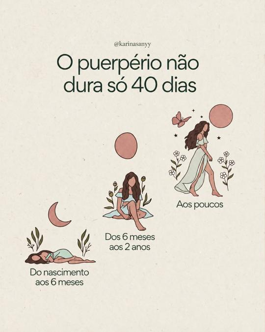
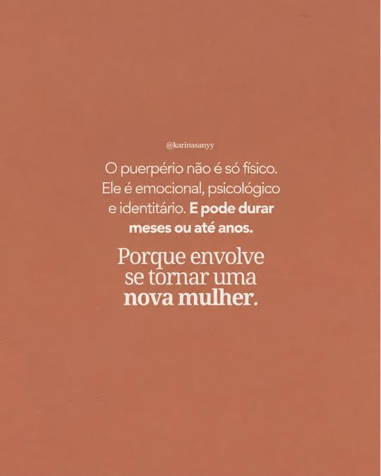
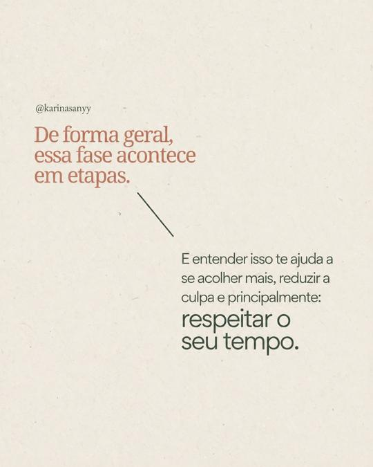
Carrossel explicativo em 10 lâminas que desconstrói a ideia fixa de resguardo e divide o puerpério emocional em 3 fases distintas.
- Tema
- puerpério · fases do puerpério, saúde mental da mãe e perda de identidade
- Gancho
- Quebra uma crença comum e limitante de que o puerpério dura apenas os 40 dias do resguardo físico, oferecendo uma nova perspectiva cronológica e visual na capa.
- Hierarquia
- Handle @karinasanyy fixo no topo. Títulos das fases dentro de um box colorido estilo tag. Corpo do texto em tamanho médio com marcadores de ponto (bullet points). Palavras de impacto em negrito ou com cor contrastante.
- Visual
- Sans-serif limpa e moderna para o corpo, combinada com fonte serifada elegante para destaques conceituais.. ilustração, texto médio.
- Fala
- acolhedor, compreensivo e reconfortante. “O puerpério não dura só 40 dias” · “Sente que 'deixou de ser você'” · “Você não volta a ser quem era antes”
- CTA
- Pedido explicito de salvamento na última lâmina ('Salve esse post pra não esquecer disso.') para ser consultado novamente em momentos de sobrecarga.
- Por que funciona
- Normaliza a crise de identidade vivida por grande parte das mães após o nascimento do bebê. Ao nomear e dividir a dor em 3 fases estruturadas, transforma confusão mental em alívio imediato, gerando altos índices de salvamento e compartilhamento.
- Versão da Day
- A Day pode replicar mostrando como cada uma das 3 fases do puerpério afeta a rotina de sono e amamentação, enfatizando que no 'Conflito Interno' a exaustão atinge o pico e que buscar ajuda para a rotina do bebê é parte essencial do 'Renascimento'.
- Risco Meta
- baixo - Aborda aspectos emocionais e psicológicos subjetivos da maternidade de forma reflexiva sem diagnóstico clínico ou promessas médicas.
Texto de cada lâmina
- 1. capa/gancho @karinasanyy
O puerpério não dura só 40 dias
Do nascimento aos 6 meses
Dos 6 meses aos 2 anos
Aos poucos
- 2. contexto @karinasanyy
O puerpério não é só físico. Ele é emocional, psicológico e identitário. E pode durar meses ou até anos. Porque envolve se tornar uma nova mulher.
- 3. contexto @karinasanyy
De forma geral, essa fase acontece em etapas.
E entender isso te ajuda a se acolher mais, reduzir a culpa e principalmente: respeitar o seu tempo.
- 4. desenvolvimento @karinasanyy
Fase 1: Simbiose
Mãe e bebê funcionam como um só. Nesse período é comum:
• Dedicação total ao bebê
• Necessidade constante de proximidade
• Desconexão com o mundo externo
- 5. desenvolvimento @karinasanyy
Você vive em função do bebê, não consegue priorizar suas próprias necessidades e sente que "deixou de ser você"
- 6. desenvolvimento @karinasanyy
Fase 2: Conflito interno
Com o passar do tempo, surgem questionamentos:
• "Quem sou eu agora?"
• "O que restou da mulher que eu era?"
• "Como equilibrar maternidade e outras áreas da vida?"
- 7. desenvolvimento @karinasanyy
Essa fase pode vir acompanhada de culpa por querer espaço, sensação de perda de identidade e sobrecarga emocional.
Mas isso não é fraqueza. É um processo de reorganização interna.
- 8. desenvolvimento @karinasanyy
Fase 3: Renascimento
Aqui começa um movimento mais consciente. Você passa a:
• Reconhecer suas necessidades
• Ajustar sua rotina
• Resgatar partes de si
- 9. virada @karinasanyy
Você não volta a ser quem era antes. Você integra a maternidade à sua identidade e constrói uma nova versão, mais real.
- 10. cta @karinasanyy
O puerpério não tem prazo fixo. Ele acontece no seu tempo, do seu jeito.
Respeite esse processo.
Logo você conhecerá sua nova versão mais feliz, madura e completa.
[ícone de salvar] Salve esse post pra não esquecer disso.
Legenda original: O puerpério não tem relógio, nem fórmula pronta. ❤️
Respeite seu tempo, acolha suas mudanças e lembre-se: você também precisa de cuidado. Aos poucos, você vai se reencontrando nessa nova versão de si mesma. 🌷
24@bilaraujjo
2,5k curtidas · 505 comentários · 11 lâminas
Captura de leadE · Foto + caixa de textoAdaptar
Carrossel de indicações de produtos em primeira pessoa mostrando itens físicos usados no dia a dia com recém-nascido.
- Tema
- cuidados com o bebê · alívio de cólicas e disquesia em recém-nascidos
- Gancho
- Ataca diretamente uma das maiores dores dos pais de recém-nascidos (cólica e disquesia) oferecendo uma solução prática em lista de compras.
- Hierarquia
- Título principal em fonte branca sem serifa em caixa alta no topo; subtítulos ou explicações dentro de caixas retangulares beges com texto em negrito escuro; foto real do produto em primeiro plano segurado pela mão do pai; arroba do perfil no rodapé.
- Visual
- Sem serifa, bold/encorpada em caixa alta para os títulos principais, e sem serifa regular para as caixas explicativas.. foto real, texto pouco.
- Fala
- informal, empolgado e prestativo. “Esses produtos tá salvando muito” · “Papais de primeira viagem jamais guardam segredos” · “Comenta 'eu quero' que envio pra vc”
- CTA
- Pedir comentário com termo específico ('eu quero') na legenda para disparo de DM automatizada com links.
- Por que funciona
- A dor abordada gera urgência em pais desesperados por alívio do bebê. Mostrar produtos reais segurados com a mão transmite veracidade e imediatismo, e a CTA de palavra-chave multiplica os comentários impulsionando o algoritmo.
- Versão da Day
- O Manual do Recém-Nascido pode listar soluções físicas e comportamentais para cólicas/disquesia, trazendo a visão técnica da especialista sobre quais produtos realmente funcionam segundo a fisiologia do bebê e quais são desnecessários.
- Risco Meta
Texto de cada lâmina
- 1. capa/gancho Itens indispensáveis para RN que têm cólica e disquesia
- 2. contexto Papais de primeira viagem jamais guardam segredos.
- 3. desenvolvimento Cinta Térmica Bebê (auxilia no conforto em casos de gases e cólicas)
- 4. desenvolvimento Colic Calm (produto homeopático anunciado para cólicas e gases; consulte o pediatra antes de usar em bebês)
- 5. desenvolvimento Philips Avent Pétala (mamadeiras com bico antivazamento de fluxo individual) 125 ml • 260 ml • 330 ml
- 6. desenvolvimento Verdi Hidratante Relaxante Bebê & Infantil Com camomila, calêndula e lavanda
- 7. desenvolvimento Camomila Flor Flores secas • 1 kg
- 8. desenvolvimento Almofada Térmica Aromática com ervas para cólicas do bebê Conforto e aconchego nos momentos de desconforto
- 9. desenvolvimento Xô Cólica - Tropfen (roll-on aromático com lavanda, camomila e funcho, pensado para relaxamento e bem-estar do bebê)
- 10. desenvolvimento Sabonete e Shampoo Vegano com Óleos Essenciais Lavanda e Laranja Doce Bebê Infantil / Verdi Natural Sabonete líquido • Espuma de vapor Óleo essencial de menta • 200 ml
Legenda original: Esses produtos tá salvando muito, salva a dica
Do pai de primeira viagem👨🏻🍼✅
Comenta “ eu quero “
que envio pra vc esses itens 👇🏼🛒
Captura de leadD · Frase tipográficaAdaptar
Carrossel educativo em texto com fundo escuro, construindo validação empática antes de oferecer uma aula gratuita via automação por palavra-chave.
- Tema
- sono · transição do colo para o berço / sono gentil
- Gancho
- Valida o colo como algo positivo ('é maravilhoso'), removendo o tom de bronca, mas faz a pergunta de virada sobre a exaustão da família ('mas e quando não funciona?').
- Hierarquia
- Título em serifa branca de grande porte, conceitos-chave realçados em amarelo/dourado, prova social em cards/prints escuros e CTA em caixa alta no rodapé.
- Visual
- Serifa clássica/elegante para o corpo de texto e sans-serif limpa nos prints e chamadas de CTA. foto real na capa e prints de depoimentos/feedbacks reais, texto médio.
- Fala
- empático, acolhedor e seguro. “Se funciona pra vocês, aproveite e não se culpe!” · “Você não precisa deixar seu bebê chorando sozinho” · “Tem técnica pra isso.”
- CTA
- Comentar a palavra-chave "864" para receber o link da aula no direct · Lâmina 7 e final da legenda
- Por que funciona
- Acolhe a mãe sem julgamento antes de propor uma solução para a dor real (exaustão física e risco de adormecer com bebê no colo). O uso de prova social desmistifica o medo do método do choro, e o CTA numérico aciona automação via ManyChat gerando um pico enorme de comentários.
- Versão da Day
- A Day pode adaptar usando a mesma validação empática do colo, reforçando a visão do Manual do Recém-Nascido sobre respeito ao ritmo do bebê e da mãe. Utilizar um print real de aluna do MRN que transicionou o bebê para o berço sem choro e usar a chamada ManyChat com código para o minicurso ou aula.
- Risco Meta
- baixo - Aborda educação de sono infantil e criação consciente, sem fazer promessas de cura médica ou diagnósticos clínicos.
Texto de cada lâmina
- 1. capa/gancho Dormir no colo é maravilhoso mas e quando não funciona pra sua família?
- 2. contexto Para o bebê, o colo representa segurança. E é normal que ele peça para dormir abraçado em você. Segurança ➔ Relaxamento ➔ Sono. Se funciona pra vocês, aproveite e não se culpe!
- 3. desenvolvimento Mas nós sabemos que nem sempre é possível dar colo em todas as sonecas. Tem a casa, o trabalho, outros filhos... Além disso, adormcer de exaustão com o bebê no colo à noite pode ser perigoso.
- 4. desenvolvimento É totalmente possível habituar o bebê a aceitar outros locais de sono, como o berço, o carrinho... e de maneira gentil! Tem técnica pra isso. laiscarol91s comentou: Que aula rica! Aprendi mais com uma aula gratuita, do que com 3 cursos de sono caros que comprei, que no final era igual: deixa chorando que aprende. Se eu tivesse conhecido esse insta antes,
- 5. desenvolvimento Existem estratégias eficazes, que envolvem habituar o bebê a se sentir seguro dormindo em outros locais também. Você não precisa deixar seu bebê chorando sozinho para que ele se habitue a dormir fora do colo.
- 6. virada E eu gravei uma aula sobre sono do bebê que vai transformar o sono do seu filho aí na sua casa. As três estratégias mais importantes pro bebê dormir a noite toda + Como entender de vez o perfil de sono do seu bebê e ajudar ele a dormir melhor nas sonecas.
- 7. cta São estratégias que eu gostaria de ter aprendido lá atrás, quando tive a minha primeira filha. *ATUALIZAÇÕES* Menos de um mês após essa mensagem desesperada, nossa filha começou a dormir no berço. E a NOITE TODA!!!!! A AULA É GRATUITA E JÁ ESTÁ DISPONÍVEL Digite "864" para participar (e confira seu direct)
Legenda original: 👉🏻 Mande para quem tem um bebê!
.
Fiz uma aula incrível sobre sono do bebê, pra te ensinar as três estratégias que toda família precisa saber pro bebê prolongar o sono noturno, e também te ensino a identificar o perfil de sono do seu bebê (te adianto que quase ninguém sabe isso e faz TODA a diferença na hora de colocar o bebê pra dormir).
.
A aula é gratuita e vai ficar por pouco tempo disponível no ar.
.
Quem quiser assistir, só digitar 864 aqui nos comentários e conferir o direct.
.
Sono do bebê é coisa séria.
26Não abriurestrição de idade, só logado
O Instagram pede login pra mostrar esse post. Abrir no Instagram
Educativo de consultaF · Infográfico pastelAdaptar
Carrossel do tipo 'cheat sheet' reunindo tabelas de referência rápida com orientações essenciais sobre os principais cuidados com o bebê.
- Tema
- cuidados com o bebê · guias práticos e tabelas de referência para maternidade (febre, sono, vestuário, leite materno e fórmula)
- Gancho
- A promessa de entregar 'Tabelas que toda mãe deveria ter' cria uma sensação imediata de necessidade de guardar o post para consultas futuras na rotina com o bebê.
- Hierarquia
- Título principal em destaque topo-centro (fonte serifada estilizada), blocos temáticos bem divididos por cores, subtítulos em caixa alta com peso, texto explicativo conciso e avisos/rodapés acolhedores.
- Visual
- Mistura elegante de fonte serifada/display moderna nos títulos, destaques em estilo manuscrito e corpo em sans-serif bem legível. foto real + ilustração, texto médio.
- Fala
- didático, profissional, acolhedor e instrutivo. “Tabelas que toda mãe deveria ter” · “As quantidades variam de acordo com o peso e a necessidade de cada bebê” · “Salvem e compartilhem com mais mamães”
- CTA
- Salvar e compartilhar, solicitado no início da legenda ('Salvem e compartilhem com mais mamães').
- Por que funciona
- Funciona excepcionalmente bem por ser um compilado tipo 'super utilitário' (5 carrosséis em 1). As mães salvam compulsivamente porque reúne as maiores dúvidas do dia a dia (febre, janela de sono, roupas, leite materno e fórmula) em um design limpo e fácil de consultar rapidamente.
- Versão da Day
- O Manual do Recém-Nascido pode adaptar como 'Guia de Consulta Rápida do RN: 5 Tabelas Essenciais', focando exclusivamente nos primeiros 3 meses de vida (Janelas de sono curtas, sinais de fome, temperatura, xixi/cocô na fralda e camadas de roupa), mantendo os tons terrosos da marca e a linguagem acolhedora da Day.
- Risco Meta
- baixo - Apresenta orientações pediátricas educativas de caráter informativo, com avisos explícitos recomendando acompanhamento e orientação médica individualizada.
Texto de cada lâmina
- 1. capa/gancho Tabelas que toda mãe deveria ter
- 2. desenvolvimento Tabela de Febre
HIPOTERMIA - Abaixo de 35°C
NORMAL - 35°C a 37,2°C
ESTADO FEBRIL - 37,3°C a 37,4°C
FEBRE - A partir de 37,5°C
FEBRE ALTA - A partir de 39,5°C
- 3. desenvolvimento Janela de sono do bebê
[Tabela de 4 colunas: Idade do Bebê, Tempo acordado, Tempo de Soneca, Quantidade de Soneca do RN aos 3 anos]
É muito importante ficar atenta à janela de sono e sinais de sono do bebê para que ele durma tranquilo e mais rápido.
- 4. desenvolvimento Como vestir seu bebê
26°C ou mais - Apenas body de manga curta
24°C ou 25°C - Body de manga curta e calça
22°C ou 23°C - Body de manga longa e calça
20°C ou 21°C - Body de manga curta e macacão longo
18°C a 19°C - Macacão e body manga longa, calça e meia
Abaixo de 16°C - Macacão, body manga longa, calça, gorro, luva e meia
As quantidades variam de acordo com o peso e a necessidade de cada bebê.
- 5. desenvolvimento Tudo sobre leite materno
1. Coleta correta (Lave as mãos... Use frascos de vidro ou plástico próprio e limpos)
2. Armazenamento (Geladeira: até 5 dias a 4°C. Freezer: até 3 a 6 meses a -18°C. Temp. ambiente: até 2h)
3. Rotulagem (Escreva data e hora, use etiquetas simples ou fita crepe)
4. Descongelamento (Nunca use micro-ondas ou fogo direto. Descongele em banho-maria morno ou geladeira)
5. Oferta ao bebê (Copinho ou colherzinha são os mais indicados. Mamadeira só com orientação do pediatra)
- 6. desenvolvimento Volume de fórmula
0 a 1 mês: 60-90 ml a cada 2-3 h
1 a 3 meses: 90-120 ml (6-8 mamadas/dia)
3 a 6 meses: 120-180 ml (4-6 mamadas/dia)
6 a 9 meses: 180-240 ml (3-5 mamadas/dia)
9 a 12 meses: 200-240 ml (3-4 mamadas/dia)
Após 1 ano: Transição gradual para copinho (com orientação do pediatra)
As quantidades variam de acordo com o peso e a necessidade de cada bebê.
Legenda original: Tabelas que salvam a maternidade!
Salvem e compartilhem com mais mamães
Beijo beijo da PED!